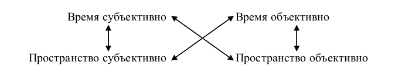
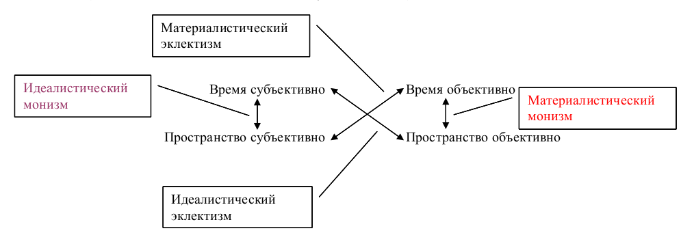

|

- Очерки психологии мировоззрения как основы просветительской практики ( Comments )
- От ничтожности к сопоставимости с Мирозданием или к вопросу о смысле существования человека ( Comments )
- Нобелевская лекция И.П.Павлова 'О русском уме' ( Comments )
- Проект "Бизнес, власть, общественность и СМИ в российской благотворительности" ( Comments )
- Дело Виталия Бунтова ( Comments )
- Дело Егора Новиковского ( Comments )
- Все мы сыны и дочери Человечества, но не собственность возомнивших о себе… ( Comments )
(все новости...)


Мировоззренческая переписка «куколки» с «жуком» на навозной куче или «Пессимистическая комедия» |
||
|
|
Письму студентки исторического факультета Ставропольского государственного педагогического института Инны М. предшествует июльское письмо Дмитрия Бродского из усадьбы археологической экспедиции Института археологии АН СССР, обустроенной близ села Высоцкое, где они и познакомились.
Поэтому в письме Инны содержатся ответы на уже сформулированные Д.Б. проблемы и другие её рассуждения, логически связанные с предшествующим общением.
Текст письма Д.Б. отсутствует по той причине, что письмо писалось «на коленке» в полевых условиях.
Ключевые слова:
Человек, Мироздание, Человечество, истина, система, принцип единства и борьбы противоположностей, степень свободы, социум, субъективное, объективное, разумные системы, субъективные причины, прямая связь, обратная связь, революция, популяционный отбор, социология, первобытный человек, средства существования, коллективизм, эгоизм, родовое сознание, культ рода, тотем, табу, собирательство, охота, земледелие, женщина, мужчина, разделение труда, добро, зло, ответственность, общественное совершенствование, конструктивное совершенствование, класс владельцев собственности, государство, эксперимент, психологический опрос, тесты, рабочая гипотеза, поведение, психология, межиндивидуальное взаимодействие, абсолютная свобода, относительная свобода, субъективная свобода, объективная свобода, вероятностная свобода, творчество, ложь, талант, гений, конструктивность, индивидуальное совершенствование, временное самосознание, потребностная сфера, потребности, цель, смысл, результат, ведущий мотив деятельности, система уверенности, благополучие, достоинство, значимость, конформизм, карьеризм, вера в социализм, хороший советский человек, комплекс неполноценности, презрение, восхищение, ненависть, дружба, любовь, равноправие, совесть, равенство, эмансипация женщин, эгоизм, тщеславие, самооценка, уровень притязания, рационализация, свобода выбора, общественное движение, свобода, личность, реализация, страх одиночества, конечное, бесконечное, страх смерти, христианство, тоталитаризм, объективный материализм, большевизм, диалектический материализм, объективный идеализм, нацизм, субъективный идеализм, историческое мышление, гибель Человечества, гибель отечества, И.Христос, В.Соловьев, Андрей Дмитриевич Сахаров.
-
Используемые ложные (а для того времени - привычные для Б.Д. ) понятия: -
являлось примером (надо писать - служило -Б.Д.), истинная гипотеза (надо писать - рабочая- Б.Д.), общественное развитие (надо писать совершенствование - Б.Д.), душа ( надо писать - психика, индивидуум, индивидуальность, личность, характер и т.д.), моральный рост (надо писать -этический рост - Б.Д. ), истинная личность (надо писать -личность, личность в собственном смысле, личность в узком смысле - Б.Д.)
Инна М.(20 лет) - Дмитрию Бродскому(36 лет)
г. Изобильний. 22.07.1985 г.
Дима, здравствуйте!
Исполняю обещание, пишу, хотя и приходится преодолевать некоторый барьер неловкости (что поделать, «комплекс неполноценности» все еще действует).
Как ни странно, второе возвращение из Высоцкого, прошло менее болезненно.
В тот, первый, раз было тоскливее. Может быть, потому, что отъезд тогда был определен необходимостью, а не мной самой?
Теперь я просто стараюсь не раскисать, загружаю себя работой. А сделать это нелегко - приходится преодолевать сопротивление мамы. Ох, мама, мама...
Она бы меня завернула в ватку, поставила на полочку и время от времени пыль бы сдувала. Сопротивляться приходится не столько самой маме, сколько своему желанию ей подчиниться: много еще во мне лени!
В пятницу съездила на дачу. Растормошила милого братца, мы с ним за день совершили громаду дел, еще и на рыбалку успели сходить. Правда, все это делалось под музыку его ворчания, но я уже к ней привыкла.
С субботы начались домашние дела, которым нет ни конца, ни краю. Хорошо, что я успела от них отдохнуть!
С 29 июля буду работать на почте, надеюсь, работа сделает мой день более организованным, успею больше почитать. Начать решила с Достоевского. Вот и все о себе, теперь можно и о высоком.
Итак, стоит задача: определить место человека и человечества во Вселенной, их отношение к мирозданию. Вы выделяете отдельного человека, утверждая, что человечество существует для максимального удовлетворения потребностей человека, и что именно отдельному человеку открывается бесконечность мира и сущность вещей. Вторая часть утверждения верна, а первая - спорна (точнее, отражает лишь одну сторону проблемы). Человечество выполняет второстепенную, «обслуживающую», роль? Нет, по-моему.
Попробуем подойти с другой стороны: человечество необходимо для того, чтобы практически осуществлять то, что создано разумом единиц. На первом этапе это ускоряет (да еще как!) движение вперед. Со временем роль отдельного человека будет возрастать, но из системы он все же не выпадет. Мне кажется, позже человечество может разбиться на специфические группки, каждая со своим развитием.
Отношения человечества и мироздания еще более сложны. Разум существовал всегда, он - часть мироздания, поэтому по отношению к разуму мироздание не может выступать «богом». А вот по отношению к разумной системе - может, но только на первых этапах. По мере познания разумная система «врастает» в мироздание, и сама со временем, может стать «богом» (правда, лишь в ограниченной части вселенной).
Вопрос: Почему мирозданию «выгодны» развивающиеся разумные системы (рождающиеся, а значит, и умирающие)?
Теперь немного информации для Егора:
во-первых, с поездкой все решено, и только непредвиденные обстоятельства смогут помешать делу;
во-вторых, теория принудительной любви к близким - ошибочна абсолютно. Следуя этой теории, человек заключает себя в клетку, убивает чувства в себе, вызывая протест и непонимание со стороны. Любовь или есть, или ее нет, промежуточных состояний быть не может. То же и с ненавистью. Мир познается и существует благодаря противоположностям.
И если докапываться до сути, то хорошими людей делает не любовь вообще и в частности, а, конкретно, любовь ко всему хорошему и ненависть ко всему плохому.
Чувства живут по особым законам.
Нужно постигать эти законы и уметь их использовать, а не создавать свои, искусственные = ошибочные...
Так?
Все! Исчерпала все мысли на сегодня.
С уважением, Инна.
P.S. Самое главное! Напишите подробнее, пожалуйста, что нашли в погребении?
Привет всем!
К сожалению, ответ Бродского Д. - Инне М. отсутствует ввиду того, что был написан в экспедиции и также не имел копии.
Инна М. - Дмитрию Бродскому
г.Изобильный. Письмо не датировано, но, вероятно, соответствует августу 1985 г.
Дима, здравствуйте!
Очень рада ответу. Письмо едва не затерялось, его опустили в ящик другого дома. Жаль, что Вы уезжаете, опять «обстоятельства сильнее нас»?
Спасибо за советы, поправки. Теперь каждое утро проезжаю на велосипеде 8-10 километров, потом - холодный душ; Вы оказались правы: жизнь кажется замечательной и удивительной после этих несложных действий.
Вы правы в другом: «низкое» и «высокое» присутствовало и еще долго, наверное, будет присутствовать в моей жизни. Объясняется это недостатком знаний и опыта, а еще отсутствием необходимой атмосферы. Все мои выводы (впрочем, их не так и много) оставались только со мной, они не были интересны (тем более важны!) другим. И я принимала как должное разделение необходимости обычного общения и «потребности» в размышлении. Правда, я никогда не думала, что это разделение означает отсутствие ясно осознанной цели. Я давно искала свою «линию поведения», не задумываясь, что это и были поиски цели. Пока в этой области все неясно, мысли неопределенны, пока...
А, Вам спасибо, за то, что здорово меня встряхнули.
А теперь о тезисах 3, 4 Вашего письма. Оправдываюсь вначале: слово «выгодны», применительно к мирозданию, я употребила, не имея в виду, что у мироздания есть свое «я».
Я рассуждала так: мир познается разумом, который теснейшим образом связан с материей, неотделим от нее. Потом, говорят же: «Природа сделала это рационально» и т.д. Впрочем, согласна, - в моем случае больше «против», чем «за».
Итак, почему же существуют рождающиеся и умирающие разумные системы? Потому, что каждая из них теснейше связана с определенной областью пространства - своей Вселенной.
А каждая Вселенная конечна. Можно ли тогда вообще говорить, что существует связь: человечество - мироздание?
Человечество никогда не сможет физически покинуть Вселенную, а познав часть, оно еще не познает целого.
Может быть, каждая разумная система узко специализирована? Но Вселенная - не замкнутый мир, она соприкасается с другими в каких-то областях, где происходит «смешение законов».
Значит, возможен, а для познания необходим контакт с другой разумной системой (П. Амнуэль)
Поэтому существует такая связь: человечество + X + Y +... (разумная система) - мироздание.
Сможет ли разум когда-нибудь стать мирозданием, познав его до конца?
А какую роль выполняет антимир?
С уважением Инна
P.S. Читаю Достоевского. Это настоящее чудо! Смешно вспоминать, как я не зная ни его, ни его книг, пытаясь с умным видом доказать, что он - ненужный писатель. После статьи Шкловского о «Бедных людях» стало обидно: я очень много не поняла у Достоевского, а много только почувствовала, но не смогла определить. Как нужен опыт чтения! Может быть, стоит вначале читать критику, а потом уже само произведение?
-
-
Бродский Д. - Инне М.
-
Москва. 7- 9 декабря 1985 года
Здравствуйте, Инна!
Вчера, наконец, получил Ваше послание. Я рад тому, что могу быть полезен в поисках «Вашего» Мироздания. Казалось бы, в выбранную Вами цель не промахнешься, но, к сожалению, на практике выбрать верный «азимут» (методологию) весьма трудно, так как так и тянет оправдать своим мировоззрением свои слабости, самоутвердиться на пустом или полупустом месте.
Пытаясь оценить свой образ жизни, Вы интуитивно «произнесли» некоторые основные ключевые слова: «общение», «потребность», «размышление», «цель», «поведение».
Итак:
-
человек - существо биологическое по происхождению и социальное по возможностям реализации;
-
человеческая личность (в самом широком смысле - как микрокосм) формируется в познании и реализации приобретенного потенциала в пространственно-временном бесконечии Мироздания, переходя от ступени к ступени;
-
необходимым условием познания и реализации личности, как социального существа, служит общение (от «низкого» до «высокого»);
-
общение может быть непосредственным и опосредованным: от встречи со случайными прохожими (ситуативно-непосредственного) до сотрудничества с ближайшими товарищами по общему делу, и от дошедших слухов о каком-то случайном событии в чьей-то жизни до исследования научно-философского наследия вашего единомышленника к какой-либо отдельной эпохе;
-
субъект сам выбирает сферы и методы общения и сам регулирует баланс используемых сфер и методов общения в соответствии со своей структурой потребностей и уровнем притязаний. Он или опрощается до положения животного (комфорт, семья, увеселения тела) или сверх-возвышается, изображая себя вочеловеченным богом (аскетизм, тщеславие, власть над людьми или, наконец. Избирает путь поиска себя как исторического существа: и тогда он и животное, и «бог», и еще что-то третье, что делает его истинной личностью - он Человек, как часть Человечества.
-
Кстати, нравственность, по Л.Н.Толстому - не состояние, а процесс непрерывного совершенствования. Я, с моим товарищем по размышлениям Нариманом Араслановым, пришли к мысли, что невозможно остановиться в развитии. Остановка означает начало процесса деградации (инволюции индивидуума);
-
личность не может состояться без вечного (до истечения срока биологического существования) размышления о самом процессе совершенствования с использованием различных форм - от политической и до конкретно-научной (включая эксперимент с обработкой данных).
-
И это..., все перечисленное, оказывается лишь средством для достижения теоретической высшей цели, которая называется - понимание смысла существования. Этот-то Смысл и должен диктовать с неумолимой необходимостью «линию» Вашего «поведения» - Вашей практики, как субъекта истории. Если последнего нет - остается фразерство - поза тщеславия.
-
Перед Вами стоят следующие вопросы:
-
Какова структура всей сферы Ваших потребностей?
-
Какие цели должны соответствовать высшим из Ваших потребностей?
-
Особо обратите внимание на высшую цель (смысл) Вашего существования. Она отвечает на вопрос «зачем?» с пределом ∞ (бесконечность).
-
К тезису 3 Вашего письма. Разберитесь, что есть субъективная и объективная реальность. Помедитируйте на тему: что есть «субъективно» и «объективно»? (напр. - «объективное мнение» - может ли быть такое?). Для облегчения решения задачи используйте книгу Дубровского «Проблемы идеального».
-
Что касается фраз типа «природа сделала это рациональным» - то это или аллегория, «образное выражение отвлеченного понятия» (Краткий словарь ин. слов, М., 1950/ под ред. И.В.Лехина и проф. Ф.Н.Петрова), или же объективно-метафизическая идеалистическая трактовка процесса развития.
-
Подумайте, чем отличается объективно-диалектический идеализм от объективно-метафизического идеализма?
-
Для этого Вам надо представить и дать определение понятий всех самых фундаментальных из возможных решений в понимании субъекта и объекта и их взаимоотношений.
-
Этих решений всего от 4-х до 8. Метод, который я Вам предлагаю использовать для поиска нужного определения понятия, я бы назвал поиском через полноту ряда (познав целое, легче понять место его части).
-
Подсказки: Л.Фейербах «Сущность христианства», Г.Гегель «Феноменология духа», индийские мистики типа Шри-Ауробинды, Свами Вивекананды, диалектические материалисты - такие как К.Маркс «Философские рукописи 1844 года» (есть отдельное издание 1956 г. - 2 тома), Ф.Энгельс «Диалектика природы», и уже упомянутый современный советский философ Д.И. Дубровский «Проблемы идеального».
-
И еще... Не брезгуйте - читайте и вдумывайтесь в статьи философских словарей типа словаря под ред. Розенталя и «Большого советского словаря».
-
Там понятия излагаются коротко, но взята их квинтэссенция. Однако, эти сведения нужно тщательно критически промысливать, так как могут быть искажения из-за недопонимания авторов или по их злому умыслу - чтобы сбить нас с Вами с толку.
-
Ваша работа пойдет лучше, и результаты будут весомее, если Вы не поленитесь составлять сравнительные таблицы философских систем.
-
Общий совет.
-
Пишите все, что Вам придет в голову касательно исторических или психических реалий, все научные, философские или этические соображения - все это рано или поздно пойдет в работу, все найдет место в Вашей системе взглядов, в Вашей педагогической, быть может публицистической деятельности..
-
К тезису 4.
-
Вы сами почти ответили на поставленный вопрос.
-
Вселенная - конечна, но совокупность Вселенных, т.е., Мироздание, - бесконечно во времени и пространстве. Что до «разумных систем», то их перспектива альтернативна. Потенциально они могут достичь + (плюс бесконечности), но для этого должны выполняться некоторые условия. Какие? - Вот Вам еще вопрос!
-
К тезису 5.
-
Разум (индивидуальный или коллективный), ставший Мирозданием, т.е. всем, - есть бог. Вы опять съехали к объективному идеализму.
-
Почему я так считаю? Познать Мироздание до конца - невозможно, ибо оно неисчерпаемо во времени - пространстве и, субстанционально. Именно в этом пафос (триумф и трагедия) разумных существ.
-
Да здравствует человек как потенциально бесконечное существо!
-
-
Последний вопрос, и на этом пока успокаиваюсь.
-
Академик, дважды герой соц. труда, несчастный отец водородной бомбы, борец за мир и социальную справедливость Андрей Дмитриевич Сахаров (ныне - ссыльный города Горький за свои убеждения), полагает, что мир и антимир не существует одновременно. Антимир является предшественником настоящего мира. Ссылку на его суждение я прочел в журнале «Наука и жизнь» за 1966 год (не могу найти карточку и саму работу).
-
Еще совет. Об анализе произведений. Когда Вы размышляете над какой-либо проблемой или следите за размышлением других, старайтесь «цепляться к словам». Это оправданно появлением новых неожиданных вопросов, лучшим пониманием себя и других, своих и чужих заблуждений.
-
[Это оправданно нахождением терминов, более соответствующих искомым понятиям, появлением, новых неожиданных вопросов, лучшим пониманием себя и других, своих и чужих заблуждений]. Вставка из окончательного варианта письма.
-
[Кстати, Р.Декарт призывал определять понятия. Он считал, что это избавит Человечество от множества надуманных разногласий]. Вставка из др. варианта письма.
-
[Пример «цепляния к словам». Некий человек даёт характеристику другому человеку: «Он был по природе добрым человеком!» Может ли человек быть добрым по природе? Приложимы ли к природе понятия добра и зла?] Вставка из окончательного варианта письма.
-
Другой пример «цепляния к словам». Ставлю вопрос: почему раньше Вы считали Достоевского ненужным писателем? Для кого - «ненужным»? Что изменилось в Вашем самосознании (по глубине отражения), что Вы поднялись до понимания его необходимости как учителя духовности.
-
[Может ли случиться в последствии, что произойдёт «уценка» его наследия? Какие перспективы отношения к Достоевскому Вам видятся теперь?] Вставка из окончательного варианта письма.
-
-
[Последнее из «дотошностей».
-
Карл Маркс говорил, что человек планируемого им будущего до завтрака будет пастухом, до обеда поэтом, а остальное время - критическим критиком.
-
Попытаюсь перевести эту формулу на социологический язык. Пастух - частный случай производителя вещей; поэт - частный случай производителя идей; критический критик - производитель себя как цельной, - адекватно реальности мыслящей Личности]. Вставка из окончательного варианта письма.
-
-
Так вот - прежде всего Вы должны быть критическим критиком - это долг перед собой и людьми.
-
Читайте произведения - лучше в подлиннике. Подвергайте его разделению на то, что в нем составит Ваше достояние, то, что Вами не понято и то, что Вами не принимается. Потом, читайте критику, касающуюся этого произведения, и анализируйте его таким же образом. Наконец, формулируйте свою оценку, внося выводы в развиваемую Вами систему взглядов.
-
-
[О себе. Жизнь идет колесом. Учусь на курсах для получения нужных «корочек»:
-
а) слесаря-сантехника 3-го разряда с целью освобождения времени для моих основных дел и для повышения уровня обеспечения жизни и деятельности; б) пропагандиста психологических знаний, что при сочетании с дипломом откроет мне возможности общаться с людьми на нужные мне темы на официальной основе (предлог удобный).
-
Слушаю доклады, лекции, посещаю семинары по проблемам, связанным с развитием органического и неорганического мира: семинар по проблемам времени, семинар по проблемам классификации и т.п., встречаюсь с массой людей на предмет обсуждения волнующих нас(с Вами) проблем, пишу, печатаю и помогаю тем, у кого на настоящий момент «плохи дела» со здоровьем, бытом или еще как.
-
Напишите, как Вы собираетесь провести весенние и летние каникулы. Я, быть может, в сентябре присоединюсь к ставропольской экспедиции, хотя, может быть, соблазнюсь другой, этнографической, организованной филологическим факультетом МГУ.
-
Пока готовлюсь к летнему сезону: не курю, не пью (после горбачевского Указа), немного бегаю, обливаюсь по пояс холодной водой из-под крана. Все бы хорошо, но несколько нарушаю режим сна и стал объедаться - не хватает воли остановиться: вот такой пассаж!!] Вставка из окончательного варианта письма.
-
-
Теперь лирика.
-
Людей, которые пристально вглядываются в себя и в окружающий их мир, катастрофически мало и я очень рад, когда вижу отблески Спасительного огня в глазах людей, идущих на встречу, и готов помогать им, как себе.
-
Если у Вас есть желание расширить круг Ваших оппонентов и «товарищей по несчастью», я могу помочь в этом тем, что познакомлю с ними. Для этого есть один из путей - приехать на студенческие каникулы в Москву. Жилье я добуду. Это будет - комната за небольшую плату у моих знакомых дам, или бесплатное обиталище у моих дам-товарищей. Да, и еще: как Вы расписали свое лето?
-
-
Дмитрий.
-
Дмитрий Б. - Инне М.
Москва. Конец декабря 1986 г.
-
Здравствуйте, Инна!
-
Начинаю беспокоиться.
-
Поздравляю с новым, 1986 годом и желаю в наступившем году откопать что-нибудь более существенное для осмысления мира, чем в 1985. Только копайте...
-
Дмитрий.
-
-
Инна М. - Дмитрию Бродскому.
г. Изобильный. 28 января 1986 г.
Дима, здравствуйте!
Очень рада была получить от Вас письмо (второе я получила 25-го января, а первое не дошло, поэтому вышлите, пожалуйста, копию).
О себе. Сессию сдала и, наконец-то, получила возможность заниматься тем, чем хочется, а не тем, что нужно для семинаров.
За полгода я повзрослела: не так ярко стал проявляться мой холерический темперамент, а самое главное - я научилась и привыкла уже мыслить не периодами.
Наверное, это хорошо, но вот какие вопросы стали меня мучить: не останусь ли я в гордом и горьком одиночестве? Уже сейчас многие мои друзья и подруги не понимают моих стремлений, а я еще не настолько умна, чтобы научиться скрывать их. Трудно здесь разобраться, одно я знаю точно - ни в коем случае я не хочу их презирать, все они отличные люди.
Как же сделать возможным наше взаимопонимание?
Достоевского дочитала почти всего (осталось 3 произведения). Первое восхищение сменилось страхом, потом - настороженностью.
Этот писатель открывает самые уродливые, нечеловеческие стороны души, да так, что ты их начинаешь ощущать в себе.
По-моему, его нельзя ни любить, ни восхищаться им, а можно лишь иметь в виду (чувство примерно то же, что мы имеем к предстоящему факту смерти, мы ведь тоже постоянно имеем его в виду?)
У нас здесь завязался спор, связанный с одним отрывком из «Подростка»: «Любить людей так, как они есть, невозможно. И, однако же, должно...Любить своего ближнего и не презирать его - невозможно...»
Подруга считает, что идеал Достоевского - общество, отдельный человек, не знающие презрения. Презрение, по ее мнению, чуждо человеческой природе, потому что возникает как заместитель более глубоких чувств. Если разобраться в любом плохом поступке (хорошо разобраться), то окажется, что он - следствие ошибки не одного человека, но многих, чья вина тоже довольно далека. Презрение - показатель того, что человек не может глубоко проникнуть в суть вещей.
Я же пытаюсь доказать, что чувства есть долговременные и сиюминутные (к ним и относится презрение), что в человеке еще много бессознательного и подсознательного. Презрение, по-моему, было, и будет всегда занимать немалую часть нашей души.
В этом споре проявилось наше различное понимание прошлого, настоящего и будущего. Подруга считает, что миг настоящего настолько краток, что его нельзя принимать во внимание; что основой всего в нас является прошлое. Я же думаю, что «прошлое», «будущее» - категории с большой долей абстрактности, что прошлое = настоящемув прошлом, а будущее - настоящемув будущем (то есть, существует как бы цепочка настоящего, протянутое через прошлое и будущее).
Кстати, я читала, что у астронома Козыреваесть своя гипотеза на этот счет. Дима, помогите, пожалуйста: что можно почитать по этому вопросу? И еще: как правильно дать себе самооценку? (учитывая, что все окружающие относятся и оценивают меня необъективно: или превозносят, или презирают)?
С уважением, Инна.
Большое спасибо за фотографию!
Дмитрий Бродский - Инне М.
Москва. 5-8 февраля 1986 года
Здравствуйте, Инна!
Я начинаю подозревать, что в г. Изобильном, а может быть, еще точнее, - в районе Вашего почтового отделения завелась местная «черная дыра» или, по крайней мере, нечто сродни Бермудскому треугольнику. Это печально, как и все, вселяющее в нас неуверенность.
Однако, следуя лучшим заветам Человечества, мы не должны «опускать руки» перед лицом неизведанного и даже опасного, и обязаны продолжать свое шествие по «хлябям» «яко посуху», но с большими предосторожностями, которые подскажет нам наш опыт.
Не знаю, есть ли у Вас копия Вашего последнего послания, тем не менее, я буду следовать в своих соображениях порядку явно или неявно поставленных в нем вопросов.
1.Вы утверждаете, что перестали «мыслить периодами».
Возникают вопросы:
-
1.1.Как вы стали «мыслить» теперь?
-
1.2. Как вообще можно «мыслить», в том смысле, который Вы имеете в виду? Покажите, по возможности, всю шкалу этих способов.
2. Вы опасаетесь остаться на своем пути в «гордом и горьком одиночестве». О формах общения я уже писал Вам в прошлом письме. Здесь же добавлю, что из каждого положения, как утверждают оптимисты, есть, по крайней мере, два выхода.
Здесь:
А- выход: быть как все. И тогда: «увы и ах!» - ваша судьба быть материалом в руках всех тех, кто социально и материально наживается за счет чужих рук и голов. (см. Коцюбинский. «Куколка»)
Б - выход: невзирая ни на что продолжать развивать в себе лучшие стороны своего характера и ума, создавать свою личность, а значит строить свой образ жизни как открытая система, руководствующаяся своим разумом, разумом общественного существа.
Одиноко ли будет такое существование?
Я думаю, что нет! В широком смысле Вы пополните собою равноправный союз всех тех членов Человечества, кто в той или иной степени сознательно направлял и направляет его историю в благоприятное для него (а значит, и для нас с Вами) русло (Сократ, Спиноза, Гете, Фейербах, И.Дицген, Р.Люксембург, Ж.. и М. Кюри и т.п). - Список близких людей огромен.
В более узком смысле, Вы будете активным членом того «гражданского общества», пассивной составной частью которого Вы ныне являетесь (здесь Ваши товарищи - все те, кто способствует развитию общественного сознания и социальной системы).
Наконец, в самом узком смысле, Вы будете создавать вокруг себя коллектив из лучших, встретившихся на Вашем пути людей для создания Общественного движения, где Вы будете осознавать себя полноправной и ответственной (перед своей совестью) частью.
Вопрос: Чем отличаются следующие понятия: знакомый, приятель, товарищ, друг? Если хотите - разверните этот ряд. В этом случае, Вы скорее ответите на вопрос: все ли ваши «друзья» таковы по определению?
Тем не менее, быть гордым (гордой), скорее всего, безнравственно, если под гордостью подразумевать упоение собственным непреодолимым превосходством над отдельными людьми и народом, хотя последнее, скорее, не гордость, а «гордыня», чванство. Что же такое гордость?
Вы часть народа, его порождение и его достижение. Вы находитесь с ним в обратной связи: его несовершенство - это Ваше несовершенство, и с ними надо бороться в себе и в других, его достижения - это, частично, и Ваши достижения, и Вы должны быть за них благодарны ему и умножать их.
Я предлагаю Вам не «гордо» парить «над схваткой» (выражение Р.Роллана) в высоких эмпиреях мысли, а проникнуться бедами и радостями народа, а значит и себя, искать эффективные пути помощи ему (а значит, и себе)
Вы заметили, что многие Ваши друзья не понимают Ваших стремлений.
Разберитесь в том, что не дает им этой возможности. Может статься, что это чуждые Вашим потребности и цели люди?! Могут ли, и на каком уровне, - они могут быть Вашими союзниками, а на каком - «опасными врагами». Вдруг Вы пригрели ядовитую змею или скорпиона и своим поведением предуготовили себе, своим близким и своему делу большие неприятности? - Вопрос не праздный!
Изучайте психологию. Она, как и экономика, даст Вам ключ к пониманию себя и окружающих. Эти науки, идя навстречу друг другу, сталкиваются в области социологии, где история лишь аспект рассмотрения системы Человечества во времени.
3. Отношение к Достоевскому: восхищение - страх - настороженность. «Иметь в виду» и «иметь в виду» - разные вещи.
«Я имею тебя в виду!» - означает, что я плюю на оппонента, игнорирую его.
Я же за такое отношение к оппонентам:
1. мерзостям в своем характере (то, что Вы стали ощущать в себе, читая Достоевского);
2. смерти (т.е., своей биологической конечности) - чтобы с честью выйти из выпавшего на мою долю «переплета»: 1.1. подавить мерзости в себе (теоретически и практически); 2.1.преодолеть страх смерти, создав систему взглядов и выработав образ жизни, которые смерть из «пугала» сделают стимулом к личному и общественному совершенствованию.
А потому, тому, кто помог заглянуть в себя и открыть эту правду о том, что, может быть, никогда не открылась нам без помощи из-за недостатка опыта и знаний, нужно быть безмерно благодарным.
Кто испугался правды о себе - тот остановился, кто остановился - тот стал отступать, кто стал отступать - тот отказался от себя как личности и, следовательно, деградировал до «индивидуума» (помните «человека в футляре», который считал, что каждый индивидуум должен жениться), хотя это не значит, что жениться не стоит при благоприятных обстоятельствах.
4. О любви и презрении.
Я думаю, что любить в другом человеке надо лучше,что есть или может быть у Вас в душе. Это лучшее в другом необходимо брать в союзники на пути совместного совершенствования.
В каждом человеке (и в себе самом) есть нечто, заслуживающее призрения.
Целью общественного развития является Человек (Личность),
часть, заслуживающая презрения которого - стремится к бесконечно малой величине (- ), а часть, заслуживающая любви (восхищения) - стремится к бесконечно большой величине (+ ).
Достоевский прав в том, что усмотрел тенденцию в этом направлении, но не прав, утверждая, что общество без чувства презрения возможно.
Ваша знакомая, по-моему, верно подметила, что «презренные» качества имеют объективные основания. Однако она «невинно» не обратила внимания на то, что «презренные» качества имеют и субъективные причины, ибо человек, как и любое другое Разумное существо, имеет свободу выбора с пределом , ограниченную лишь рамками достигнутых в целом общественных отношений (достигнутых хотя бы факультативно). Таким образом, Ваш оппонент склонен оправдать (простить) негодяя, сняв с него (а значит, потенциально, и с себя) ответственность за себя и общество.
Вы правы в том, что презрение будет всегда занимать часть человеческой души и не правы в той пессимистической статичности, с которой Вами мыслится будущность этой морально-эмоциональной оценки.
(Моя позиция, изложена выше и в контексте анализа).
5. Прошлое - настоящее - будущее.
Мне видится, что Ваша знакомая, «борясь» с «краткостью» настоящего «мига», уничтожила «настоящее» и, таким образом, самоуничтожилась (вся осталась в прошлом и, тем самым, выпала из реальности).
Ваша позиция, по-моему, конструктивна, т.е., предполагает осознание «настоящего» как непрерывность «великого исхода» системы в будущее с использованием богатств и бремени своих прошлых «настоящих» состояний. Ваш подход не устраняет субъекта из настоящего, т.е., состояние наличествования, и открывает для него действительные перспективы в объективной реальности.
Если Вы внимательно взглянете на позиции Вашей знакомой, Вы сможете обнаружить определенную цельность (непротиворечивость) ее суждений и, к сожалению, сделать некоторые нелицеприятные для нее заключения.
Надеюсь, что Вы их мне изложите. Однако, я не настаиваю на этом.
Предупреждаю Вас - не пытайтесь ее переубедить - это невозможно (об этом, если захотите, поговорим позднее).
6. К вопросу о самооценке.
Человеческая психическая индивидуальность многопланова, и поэтому невозможно, с помощью одного простого приема, дать ей исчерпывающую оценку. Тем не менее, осмысливать себя необходимо и я постоянно уделяю этому должное внимание. Вот один из простых подходов к оценке своей потребностной сферы.
Для этого перечислите все, что бы Вы хотели иметь, осуществить и достичь, будь у Вас неограниченные («божественные») возможности. Можете попытаться выяснить сферу потребностей Ваших знакомых (презирающих и превозносящих Вас).
Проведите среди них «шутливый» опрос на тему: «Если бы я стал Всемогущим (волшебником, богом)?» Пусть пишут все свои желания, пришедшие на ум в виде списка.
Дальнейшее объясню в следующем письме.
С уважением Д.Б.
P.S. Есть ли у Вас книга «Логический словарь - справочник» под ред. Н.И. Кондакова?
По проблемам времени есть книга М.Д.Ахундова «Концепции пространства и времени: истоки, эволюция, перспективы». М., 1982, изд. «Наука»
Дмитрий Бродский - Инне М.
Москва. 1 марта 1986 года
Инна!
Поздравляю Вас с Днем надежды на социальное освобождение женщин.
Можно надеяться и ждать - здесь не видно личности. А можно сознательно содействовать осуществлению надежды. Это и есть «активная жизненная позиция»(Л.Брежнев)
Почему не отвечаете? Критику «по существу» принимаю с охотой. Мне нужна ясность.
Инна М. - Дмитрию Б.
г. Изобильный. 10 марта 1986 года
Дима, здравствуйте!
Простите, ради бога, опять задержалась с ответом. Знаете, в жизни бывают светлые и темные полосы, я сейчас попала в одну из темных. Успокаиваю себя тем, что «чем хуже, тем лучше» (интереснее, во всяком случае).
Раньше я воспринимала мир пестрыми блоками, туманно, нечетко, а теперь вдруг очень резко проступили промежуточные звенья, стыки. Анализ стал резко преобладать над синтезом, что случилось?
Я стала трезвее смотреть на вещи, в этом повзросление (о чем я довольно наивно написала в прошлом письме)?
Знаете, что я поняла? Что мой вид говорит больше, чем могу сказать я сама (просто как, но чего мне стоило «опустить» себя на землю).
Я думаю, что сейчас настал момент, когда я обязана сделать шаг назад в своем самомнении.
Считать себя никем и ничем - только тогда можно чего-нибудь достичь. А за свою лень себя еще нужно и ненавидеть.
Жестокая картина! Просто раньше мой духовный мир был разделен на две половины: я - идеал и я - стремящийся к идеалу.
А теперь я вынесла идеал за пределы себя - так лучше рассматривать и понимать.
Нужно оставить глаза, уши и «сито», просеивающее впечатления. Как мало я еще знаю!
Я - частица народа. Но чтобы что-то понять и кого-то вести, нужно быть и с людьми, и над ними. Разрыв этой связи, и ты либо в болоте мещанства, либо в колодце эгоизма (помните Козьму Пруткова: «эгоист подобен давно сидящему в колодце...»). Вот меня и тянет то в болото, то в колодец.
Что касается Достоевского: не я изменилась и по-другому стала воспринимать его, а он меня изменил. Я имею в виду его героев, мысли, идеи, вот в каком смысле: от тех мерзостей, что он описал, нам еще долго не избавиться: этот черный угол души не замаскируешь. И его нужно иметь в виду до тех пор, пока не вытеснится он светлым.
Моя неточность вначале: я исключила момент борьбы с темным (? - Б.Д. 2010 г.)и ничего не упомянула о борьбе за светлое (? - Б.Д. 2010 г.)
Дима, по ходу возник вопрос: теоретически каждый человек имеет право выбора, а практически (к еще одному вопросу о презрении)?
О моделях времени: Наташина модель больше полна движения (= противоречий) - волна прошлого накатывается на песок будущего, а грань настоящего неуловима. Потом, основа всего в нас оставляет именно прошлое. Настоящее у Наташи - скачок прошлого к будущему. А моя модель более «учёна», рациональна, предусматривает строгое направление времени.
Сейчас очень хочу заняться вопросом эволюции понятия «время» в древней философии.
После Достоевского решила взяться за Чехова. Толстого читать не могу физически. Своими теориями он вызывает невероятный протест. Не хочется будить неприязнь, что родилась к нему еще в 10 классе.
Пытаюсь составить программы самообразования на год, месяц, неделю.
Берусь осторожно - боюсь не выполнить и потерять уважение к себе.
С летними планами большие сложности: обязали работать пионервожатой в лагере. Сроки сессии неизвестны, а учеба начинается с 1-го сентября.
Но в экспедицию все равно поеду, каникулы у нас ведь не отберут, я надеюсь.
С уважением Инна
Дмитрий Бродский - Инне М.
Москва. 22-29 марта 1986 года
Здравствуйте, Инна!
Получил Ваше письмо. Обеспокоен. Не слишком ли жестки к себе?
1. «Лень», по-моему, это не что иное, как, или:
1.1. утрата мотива деятельности, 1.2. следствие замешательства в выборе системы уверенности 1.3. или, наконец, пониженный тонус.
1.1.1. Для борьбы с первым злом постройте для себя «иерархию смыслов», начиная, например, с положения: «Я познаю для того, чтобы...».
1.1.2. Для борьбы со второй напастью после ответа на первую систему вопросов ответьте на вторую систему: «Что для этого нужно сделать?»
1.1.3. Ответив на эту группу вопросов, ответьте на вопросы третьего порядка: «Какие для этого я должен иметь субъективные и объективные возможности?»
1.1.4. Наконец, вопросы четвертого порядка призваны побудить личность ответить себе о том, иерархия каких систем уверенности способна удовлетворить Ваши иерархии: а) смыслов; б) деятельностей; в) требований.
Например: а) семья’ учреждение’ государство; б) я (семья)’ общественная организация’ нация или человечество.
Борьба с пониженным тонусом Вам хорошо знакома, но она требует постоянного совершенствования с помощью перенятая опыта «победителей» в этой схватке.
[Общие советы по работе со своим субъективным миром. - Б.Д. Июнь 2010 г.]
1. Помните, что с детства и до настоящего времени Вы отстояли (спасли), ценой собственных страданий, некоторое число ценностей своей души, которые теперь могут стать ориентирами для окружающих Вас людей, поддержать их в тяге к Человечеству.
Это Ваш «основной капитал». Перестав пускать его в оборот, Вы утратите себя как Личность.
1.1. Одним из методов осознания себя как этического существа является (служит - Б.Д. Июнь 2010 г.) воспоминание всех конфликтов (их характера), в которые Вам с раннего детства когда-либо приходилось вступать сознательно или по велению чувства.
1.1.1. Проанализировав их, Вам будет проще оценивать кто Вы и каковы Ваши перспективы.
2. Все разумные люди нашей планеты находятся во (внешне не осязаемой - Б.Д. июнь 2010 г.) великой Связке, которая только и способна спасти Человечество и вести его к Эвересту полной реализации через перевалы Свободы под негасимым Солнцем Творчества. Поддерживая других движемся и мы. В этом и диалектика процесса реализации.
2. Вы задаете вопрос: «Теоретически каждый имеет право выбора, а практически?»
2.1. Свобода есть познанная необходимость - считали Спиноза, Фихте, Маркс, и действовали согласно этой формуле.
Ходит такой анекдот: «Один спрашивает: «Я имею право?» Ему соответствующий «товарищ» ответствует: «Да, имеете!» Первый продолжает упорствовать: «А могу?» - «Нет, не можете!» - поясняет ему «компетентный товарищ».
Для того, чтобы понять эту грустную шутку, поразмышляйте над (реализацией - Б.Д. Июнь 2010 г.) любой из 3-х принятых конституций СССР.
2.2. Вопрос о праве имеет прямое отношение к человеческой свободе.
2.2.1. «Имею ли я право?» - т.е., дана ли мне (и кем?) свобода выбора поступка, образа действий, деятельности, в соответствии с создавшейся ситуацией, существующей обстановкой, историческим периодом.
2.2.2. Очевидно, что абсолютной свободы, т.е., единомоментной возможности достичь абсолютно всех желаемых целей быть не может, так же
2.2.3. как невозможна и относительная свобода, т.е., возможность достичь любой очередной цели в любой последовательный момент времени.
2.2.4. Однако, возможна вероятностная свобода, то есть, достижение некоторого ряда желаемых целей в некоторый период времени при некоторых обстоятельствах.
2.2.4.1. Вероятностная свобода характеризуется степенью свободы, то есть, рядом возможностей выбора: а) смысла, б) целей и в) средств их достижения (субъективная свобода), а также рядом (а может быть, в ряду) возможностей (или вероятностью) их достижения (объективная свобода).
2.2.4.2. Пример. Существует конечное (и небольшое) число понимания смысла существования Личности.
Возьмем одно из пониманий - жизнь ради идеала любви.
В рамках некоторого числа понимания смыслов жизни можно выделить способы понимания целей жизни, число которых будет порядком выше.
Для достижения идеала любви люди могут поставить следующие цели:
2.2.4.2.1. любить весь мир (буддисты (?), Циолковский (?);
2.2.4.2.2. любить все живое (А.Швейцер с его этикой «благоговения перед жизнью» (?);
2.2.4.2.3. любить всех людей (так называемые «белые маги»);
2.2.4.2.4. чувственно любить всех людей (композитор Скрябин (?);
-
2.2.4.2.5. чувственно любить всех женщин (субъекты типа Дона Гуана (?) или мужчин ( );
2.2.4.2.6. любить своих детей,
-
2.2.4.2.7. любить только себя (как произведение искусства - Б.Д. Июнь 2010 г.)-нарциссизм;
2.2.4.2.8. любить произведения искусства как человека - пигмалионизм;
2.2.4.2.9. любить бога
- дополнить и уточнить, если будет желание.
2.2.5. В пределах суммы возможных пониманий цели жизни выделяется еще порядком выше число средств достижения этих целей.
Взять хотя бы любовь к богу.
Средством достижения могут быть:
2.2.5.1. и молитвы разного содержания,
2.2.5.2. и жертвы разных форм (жертвование предметов, себя, других лиц) и
2.2.5.3. распространение веры в разных формах (проповедь, рукопись, собственный пример, запугивание, обещание, религиозная война (т.е. применение силы любого масштаба и интенсивности). Здесь тоже требуется тщательная дифференциация, так как у меня все в кучу.
2.3. Кроме того, берясь за исследование понятия Свободы человека как общественного существа, необходимо проследить, как развивалась детерминация человеческого общественного поведения в историческом аспекте.
2.3.1. В первобытной орде человек в качестве этического существа руководствовался традиционным культом рода, призванным защищать его (и рода) благополучие и само его (и рода) существования.
2.3.2. Не существовало класса, присваивающего собственность на средство производства, а значит, не существовало государства, как защитника интересов класса владельцев собственности на средство производства, а это, в свою очередь, означает, что не существовало государственных институтов, среди которых и надо искать институт Права.
2.3.3. С другой стороны, первобытный человек жил замкнутыми родовыми общинами и утверждал свою Человеческую сущность не за счет поиска общих черт членов разных родовых организаций, а именно, за счет противопоставления и подчеркивания своей избранности, то есть не существовало индивидуумов, отождествляющих себя (свою сущность) со всем Человечеством - являющихся носителями общечеловеческого самосознания.
2.3.3.1. Это значит, что не настало еще время возникновения феномена Нравственности (нравственность - это нормативная форма, регулирующая деятельность человека как потенциально бесконечного общественногосущества; в качестве обратной связи с обществом здесь является совесть).
2.3.3.2. Первобытный человек был связан родовой традицией, выраженной в родовом культе. Ею и определялись этические нормы, которым он следовал, его степень свободы. Таким образом, он не знал и Морали (мораль - это нормативная форма, регламентирующая деятельность человека как заведомо конечного общественного существа; в качестве обратной связи с обществом здесь являются стыд и гордость, как реакции на порицание или похвалу со стороны референтной группы), как такой формы общественного сознания, которая подводит индивидуума под диктат мнения (не закона) той или иной общественной группы, частью которой он себя считает.
2.3.4. С разделением труда от собирательства к охоте иземледелию происходит первое разделение общества на два слоя, основанное на половом различии.
2.3.4.1. Мужчины специализировались на охоте.
2.3.4.2. Женщины, помимо традиционного воспитания детей вблизи вновь образовавшихся стоянок, стали подращивать съедобные растения (прежние объекты собирательства), т.е., отрабатывать навыки земледелия, так как обладали для этого психологическими предпосылками.
Пока все.
P.S.
Инна, предлагаю Вам расширить круг Ваших «собеседников, подключив двух юношей, так же как и Вы «болеющих» философскими проблемами.
Один из них - выпускник Института технического машиностроения, горный турист, любитель жизни на природе, музыки, поэзии - интересуется религиозным сознанием. Его метод находится где-то на грани между объективным идеализмом и диалектическим идеализмом.
Другой - студент третьего курса Высшего технического училища, альпинист (бывший заядлый альпинист, вдруг обнаруживший порочность этого увлечения, как ухода от реальных человеческих проблем), увлечен поэзией Мандельштама, Ахматовой, Бродского и т.п., видя в этом способ раскрытия духовных ценностей. Он пытается обнаружить в истории причины и этапы возникновения и развития Человека как Личности.
Полагаю, что его метод находится где-то между диалектическим материализмом и диалектическим идеализмом. Люди эти вполне порядочные. Если Вы будете напротив, я вычитаю им из Вашего письма те проблемы, которые Вас волнуют или те, которые Вы предложите для такого рода обсуждения.
Если Вам представляется затруднительным вступлением в полемику сразу с двумя оппонентами, укажите - общение с кем Вам было бы желательнее для начала.
Нашел в себе силы коснуться еще одного теоретического (а по сути, как всегда, практического) вопроса.
К представлению о времени у Вашей знакомой.
1. Вы говорите, что настоящее для нее - это скачок из прошлого в будущее, т.е., как я понимаю, из того, чего уже нет в то, что еще не настало (из того, что от меня уже не зависит в то, по отношению к чему меня еще нет).
2. Мне кажется, что представление ее о настоящем нигилистичны.
2.1. Она исключила себя из настоящего, что дает ей возможность бесстрастно взирать на прошлое и не чувствовать своей ответственности за будущее - ведь она, пользуясь выражением Р.Роллана, «над схваткой», которая происходит в настоящем.
Кстати, чем отличается бесстрастность от беспристрастности?
Пока все. Спешу, правда, к сожалению, очень медленно, отправить Вам свое послание.
О себе писать уже нет времени. Жизнь моя полна новых и старых дел, новых встреч и старых и новых неприятностей.
Хотелось бы знать, как к нашей переписке относятся Ваша мама и брат.
Напишите, что Вы собираетесь делать в весенние каникулы и не желаете ли погостить в Москве (жильем обеспечу у своих знакомых дам).
С уважением, Дима.
Некоторые источники по проблемам времени и бесконечия:
Ахундов М.Д. Пространство и время в физическом познании. Изд-во «Мысль», 1981.
Виленкин Н.Я. В поисках бесконечности. Изд-во «Наука», 1983.
Кармин А.С. Познание бесконечного. Изд-во «Мысль», 1981.
Сб. под ред. Ерунова Б.А. «Философские аспекты проблемы времени». Л., 1980.
Инна М. - Дмитрию Б.
г. Изобильный. 23 марта 1986 года
Дима, здравствуйте!
У нас весна вступила в свои права. Дни яркие, вечера южные. С каждым часом сил прибавляется. И хочется совершить что-нибудь необычное, на удивление всем.
Учеба пошла что-то слишком легко - это пугает, нужно нагружать себя. Сейчас я в поиске оптимального варианта: нужно сочетать работу и общение с товарищами без ущерба одного другому. А зачем нужны успехи без друзей?
[Кстати, я провела то шутливое тестирование, которое Вы советовали - многие раскрылись, а многие «сыграли» в идеал]. Для себя сделала вывод: нужно все и всех оценивать без предвзятостей, не создавая заранее свой, придуманный образ человека, явления.
(Интересно, а на следующих этапах можно ли придумывать образ в воспитательных целях?)
Читаю понемногу Евтушенко. Неужели он такой уж лжец, каким его описывают знающие люди? Тогда это талантливый лжец.
До Чехова никак не дойдут руки.
О женщине. Сейчас настало время, когда одна часть мужчин полюбила высказываться о равенстве и т.д. Другая часть - активно протестует. А на деле женщина не получает ничего. В этом я согласна с М.Ганиной (ст. «Страсти по Шекспиру» в «Лит.газете»).
Я «ударилась» в прозу.
Ведь ясно: от самой женщины зависит, будет ли она личностью или нет. Но вопрос еще и в том, признают ли ее личностью!?
В начале должно произойти освобождение мужчин от предрассудков, иначе все слова останутся прекраснодушными мечтаниями. (Видно, что человек продолжает ментально находиться в иерархической патриархальной матрице - Б.Д. Июль 2010 г.)
О науке. В принципе человек «знает» (видит, не осознавая) все. Осознает мало. Парадокс!
Но еще загадочнее тот факт, что мозг был сразусоздан во всей сложности.
Человек лишь постепенно открывает свои возможности. Зачем природе такое расточительство? Или мы все «уроды», а гении - самые нормальные люди?
С уважением Инна
Спасибо за сказку!
Дмитрий Б. - Инне М.
Москва. 4-8 апреля 1986 г.
Здравствуйте, Инна!
Я рад Вашему приподнятому настроению и завидую Вашей уверенности в освоении учебной программы.
Ваш уровень самооценки достаточен для того, чтобы не только «школярничать» - это Вам дается легко, а и производить самостоятельные изыскания.
Например. Вы заинтересовались проблемами «времени».
1. Попытайтесь нацеленно взяться за развитие представления «о времени» во временном аспекте: в процессе исторического развития Человечества и процессе формирования человеческого индивидуума. Для начала попытайтесь выделить все возможные аспекты рассмотрения этого «объекта».
1.1. Вы, наверное, подумали: «Вот - «загнул!» - такое за всю жизнь не поднять!» А Вы не «стесняйтесь» - берите и «поднимайте» с расчетом на Ваших друзей и учеников, на всех, кого это взволнует.
1.1.1.Действительно, я глубоко убежден, что в этих поисках главное не масштабность исследований, а все большее укрепление сопричастности личности с протекающими во времени процессами и вовлечение в деятельность по самосознанию своей Исторической реальности и значимости все большего числа лиц. Это моё убеждение в корне противостоит высказыванию твердокаменного большевика Глеба Максимилиановича Кржижановского - «люди проходят, как тени, но дела их - как скалы».
1.2. Изучая проблему от муравьев и до людей, мы должны постоянно отдавать себе отчет в том, что мы не муравьев исследуем, а некоторый этап своего собственного развития от муравьев (и даже далее в глубину материи) до Нашего с Вами нынешнего состояния, с тем, чтобы четче увидеть свои перспективы.
1.3. Человеческое художественное, научное и техническое познание, в конечном счете, - путь человеческого самосознания.
1.3.1. Не каждый, к сожалению, понимает это, и посему, даже посвящая себя гуманитарной сфере, высовывается «мочажиной» профессионализма над запустением общественного болота. («Профессионал подобен флюсу» - Козьма Прутков; «профессиональный идиотизм» - Карл Маркс; «идиотизм крестьянской жизни» - Глеб Успенский)
1.3.2. Я (как, надеюсь, и цитируемые «товарищи») - отнюдь не против блестящего владения языком (навыками, умениями) какой-либо области знания. Ведением профессиональной деятельности осуществляется непосредственный вклад человека в копилку идеальных и материальных общественных богатств.
1.3.3. Кроме того, профессия с момента ее возникновения, служит (или, по крайней мере, до сих пор служила) источником средств существования, рубишь ли ты лес или расщепляешь атом. Беда профессионала (если он только профессионал) заключается в его нравственной безответственности за то, как будет использован результат его деятельности. Отсюда рукой подать и до общественной беды.
«Ты зачем колешь дрова?» - «Топить печь!» «Но в ней же сжигают людей!» - «Откуда я знаю, что там сжигают - я колю дрова!»
Извините, увлекся. Вернемся «к нашим баранам».
2. Интересно (ибо очень важно), человек каких качеств (какого понимания себя в мире), более склонен оценивать общественные реалии (и людей в том числе) «без предвзятостей»?
3.1.Нельзя ли считать идеализацию оцениваемого лица (явления) - в качестве «рабочей гипотезы», т.е. промежуточной (пробной) гипотезы - догадки по поводу объекта изучения?
На следующем этапе(этапе научного обоснования) - возникает истинная гипотеза, которая требует проверки практикой эксперимента или жизни.
3.2. Использование указанных соображений в приложении к воспитанию, как частному случаю межиндивидуального взаимодействия.
На основании гипотетического знания о
социально-психологической модели интересующего нас человека и
условий его взаимодействия с окружающим социумом мы можем
предположить направление и возможности морального роста этого
человека. Из указанных оснований и должна строиться практика
воспитания или иная практика взаимодействия (союз, соседство,
борьба и т.п.) с тем или иным человеком.
4.1. О Евтушенко. Что такое ложь (не абстрактно, а
по-существу)?
4.2. Что порождает ложь (в историческом и индивидуальном аспектах)?
4.3. Что есть ложь как социально-психологическая реальность?
4.4. Всегда ли ложь является злом?
4.5. Всегда ли правда является признаком добра (благом)?
Возникли еще вопросы:
4.6. Любая ли деятельность творца оправдывается его талантом?
4.7. Есть ли какой-нибудь критерий для определения понятия «талант»?
4.8. Есть ли какой-нибудь критерий для определения понятия творчества?
5. О женщине
5. 1. Разведите понятия равенства и равноправия - и уже будет легче.
5.2. О женщине - личности. Давайте честно! Какое дело - кем меня считают:
а) в отделе кадров;
б) вон...тот человек на улице.
В конечном счете, важно то, кем себя считаю Я Сам, и в какой мере я оправдываю в своих глазах данное определение (будем сами себе Иешуа Ганоцри).
5.3. Я согласен, что в социальном аспекте на мужчине, но не в меньшей мере, и на женщине, лежит ответственность за «тиражирование» модели «типичной женщины», как существа духовно слабого, не критичного к себе, истеричного и ведомого «на поводу» у своих эмоций или «на поводу» у мужчины. Отсюда следует, что бороться за право женщин на личность (как и при любой борьбе с угнетением) должны сами женщины с помощью множества средств, в том числе, в тесном союзе с мужчинами, осознавшими общественную необходимость такой борьбы.
Ведь женщина находится у истоков ответственности, достоинства, свободы и реализации и личности мужчин, и личности женщин, ибо именно с женщиной новорожденный человек первоначально вступает в нравственное (или безнравственное) общение.
6. О познании
6.1. Я, вероятно, не понял Ваше сильное утверждение о том, что человек «в принципе» знает все. Мне кажется, что в лучшем случае здесь Вы стали жертвой психологизации космической сущности человека (объективный идеализм). Отсюда вытекает положение о том, что человек как бы «вспоминает» уже присутствующее в нем знание, «пробуждается» к его осознанию.
Объективный (не диалектический) материализм так же искажает представления о происхождении наших знаний, приписывая им врожденный (инстинктивный) характер. Эта позиция весьма неустойчива и имеет тенденцию к скатыванию её носителя в объективно-идеалистическую область.
Я, как желающий быть последовательным диалектическим материалистом, утверждаю, что знания человеческого индивидуума - есть результат его взаимодействия с момента зачатия и до смерти с реальностью на принципах единства и борьбы противоположностей. Всякое, приписываемое ему иное происхождение знания - «от лукавого».
Действительно, человеческий индивидуум фиксирует в своей нервной системе практически всю информацию, поступающую в течение жизни через органы чувств, но эта информация находится на разных уровнях подготовленности к субъективному использованию. Это и степень ее осмысления, и структурированности, и степень ее приближения к возможностям осознанного использования.
6.2. Мне требуются и пояснения по поводу Вашего утверждения о «внезапности» возникновения человеческого мозга во всей его сложности.
6.3. Не вижу я и «расточительства» (чьего?).
Его и быть не может. А есть, как мне видится, «расчет» на перспективу.
В последнем положении я сам отдал дань объективному идеализму и спешу оправдаться. «Расчета» у природы нет, ибо она не является субъектом.
Исправляясь, я пришел к одной заманчивой идее.
Первобытный человек не был Личностью, но... весь род его, с культом предков, связанным с представлением о «непрерывности» существования его рода был, как говорят христиане, «соборной» личностью.
Не Личности членов рода должны были судить о своем роде, а члены рода, как части совокупной «Личности», - о других родах как о Личностях. (Повстречав незнакомого человека, другой человек интересуется у него не личными характеристиками, а: «Ты какого, мил-человек, - рода-племени будешь?» - вставка Б.Д. июня 2010 г.)
Необходимой предпосылкой для этого предличностного состояния являлось развитие мозговых структур первых людей, способных осознавать (или хотя бы интуитивно почувствовать) бесконечную значимость своего собственного рода, как некоей сверхъестественной «Личности», - в образе тотема. Эти соображения сливаются с возникшими и укрепившимися в последние десятилетия в биологии представлениями о том, что эволюция живых форм «имеет дело» как со своим генетическим материалом, не с особями (совершенствование, конкуренция, отбор), а с популяциями. Популяция (род) - является единицей эволюционных преобразований. Человек здесь не мог быть исключением.
6.4. На последнем утверждении Вашего письма я охотно сойдусь с Вами как с демократичным и историчным.
6.4.1. Мы, действительно, все в той или иной степени уроды, и только «гении» показывают возможные пути нашей (видоспецифической - Б.Д., июнь 2010 г.) реализации.
6.4.2. Тем не менее, у каждого из нас есть и возможность стать Личностью, наполнив Смыслом свое существование, и плодотворно заниматься тем или иным творчеством, которое сделает нас полноценными членами Рода Человеческого.
6.4.3. Однако, за все это надо бороться, а несовершенное общество (по Ф.Энгельсу мы живем в «предыстории Человечества»*) зачастую делает нашу борьбу трагичной.
(* Возможно, История Человечества начнётся с момента создания Объединенных Штатов Мира, то есть Федерации народов мира. Но до этого счастливого момента Человечество может и «не дотянуть». - Б.Д. Июнь 2010 г.).
Тем не менее, перефразируя Гете:
«Мы все достойны жизни бесконечной,
лишь ежечасно с ней сверяя жизнь свою!»
О себе. Вчера сдал экзамен, позволяющий мне владеть еще одной «кормящей» специальностью. Заработал на этом дополнительно еще 20 рублей в месяц. Теперь мой сын будет получать на 5 рублей больше (35 рублей), а остальные «средства» я уж знаю куда употребить.
Впереди меня ожидает еще один экзамен, открывающий мне официальную возможность общаться с людьми. Не знаю, что будет, так как есть сложности (мне нельзя сообщать о своем высшем образовании).
Собираетесь ли Вы в экспедицию? Связались ли с Мариной Владимировной?
С уважением, Д.Б.
Инна М. - Дмитрию Б.
г. Изобильный. 29 апреля 1986 года
Дима!
Поздравляю Вас с весенним праздником.
Желаю Вам успехов во всем и только хорошего настроения.
Умных мыслей!
Добрых друзей!
Инна М.
На этом поздравлении в переписке наступила длительная (на несколько лет) пауза.
Во всяком случае, ответного письма Дмитрия Б. обнаружено не было.
Инна М. - Дмитрию Б.
г. Изобильный. 27 января 1989 года
Дима, здравствуйте!
Это будет странное письмо. Мне странно самой. Помните Инну М-скую, бывшую с Вами в экспедиции у Андреевой в 1985 году?
Это я. Но уже пятый год спустя. Потому и другая. Я пишу, чтобы оправдаться и попросить извинения, хотя бы перед собой, так как не знаю судьбу этого письма.
Вы видели меня в экспедиции и потом писали некоей девочке, которая многого не знала и не понимала, которой просто приятно было, что с ней общаются такие умные (и пр.) люди.
Мои умствования в ответных письмах были надуманными, поднимаемые вопросы меня не волновали, и я думала лишь о том, чтобы замысловато построить фразу.
И Вы это поняли. И я это поняла, но с высоты прошедших лет, а потому и поздно.
Но все же. Ничто и никогда не проходит даром. Часто игра, чисто внешняя привычка превращаются в исконно присущие, неотделимые.
Я не хочу утверждать, что моя игра в «умную» превратилась в нечто, выражающее истину, так как докажу этим противоположное.
Я ищу ответы на больные вопросы, стараюсь сделать это искренне. Не более. Но и не менее. Вот и все.
Почему я все же написала? У меня сейчас переломный момент: я пересматриваю свое прошлое, чтобы включить его в настоящее.
Дим, а время все же субъективно. Мое настоящее в этом письме уже предусматривает и программирует Ваше будущее (а для Вас настоящее по получении или неполучении письма) и мое прошлое. Чтобы время стало объективным, нужно убрать разум, сознание, но тогда зачем время?
Надеюсь, у Вас все хорошо.
-
Инна М. -
Дмитрий Б. - Инне М.
Москва. Февраль 1989 г.
Здравствуйте, Инна!
Очень рад, что в дни обретения своих духовных поисков Вы обратились именно ко мне. Рад и одновременно опечален, ибо достойно сожаления то, что Вам в своей среде не удалось найти товарищей близкого Вам уровня.
Ну, что ж, готов быть Вам полезным.
Хочу объясниться. Переписку я прекратил, определив из Вашего честного письма, что поискморального (индивидуально-группового) единства с Вашими однокурсниками в ту пору превалировало в Вашем сознании над поиском нравственных (личностно-общественных) ценностей. В то время Вы еще отождествляли нравственное и моральное сознание. В письмах же я, в основном, изложил, на сей счет, свои соображения.
А так как я осознал Ваш духовный потолок того времени и свою неспособность пробить его без Вашего участия - я просто самоустранился за ненадобностью.
Действительно, в тех условиях наши дебаты были бы рассуждениями обо всем и ни о чем, нужными только, может быть, для удовлетворения собственного тщеславия.
Мысль же, в моем варварском понимании, перефразируя Гете, только тогда «достойна жизни и свободы», когда с ней каждый миг идешь на бой.
На бой за себя в высшем личностном смысле, в попытках утвердиться в качестве общественно-космического существа.
И, тем не менее, хотя быть может с неоправданным опозданием, я хочу поблагодарить Вас за прежнюю переписку. Ведь она мне тоже много дала.
Вы, наверное, уже обратили внимание на то, что с тех благословенных дней я мало изменился в своем занудстве. Однако привычка - вторая натура.
Теперь рассмотрим выдвинутые Вами проблемы.
Я не знаю, оставляете ли Вы у себя копии своих писем?
Если нет - напомню Вам некоторые пункты недавнего послания.
1. Необходимость пересмотра прошлого для включения его опыта в будущее.
Подход, по-моему, диалектичен. На этот счет смотрите мое микро-эссе (Приложение первое и единственное).
2. По вашему мнению, - время - субъективно. Предлагаю все множество подходов.

Соответствуют ли выделенные четыре диспозиции (Прим.1) каким-либо философским школам или направлениям (а может быть просто обыденно мировоззренческим подходам - Б.Д. 5 июля 2010 г.) ?
Если нет, то какие альтернативные подходы к пониманию времени Вы имеете в виду?
Например, каковы различия в подходе к пониманию времени у религиозных идеалистов, философских идеалистов и т.п.?
3. Мне показалась интересной схема о детерминации Вашим настоящим моего будущего. Однако позволю развернуть и уточнить схему.
Любой субъект, планируя, сознательно или бессознательно учитывает прошлое и с разной степенью адекватности предусматривает будущее свое и объекта. Эта часть - субъективная.
Но есть, оказывается, и объективная часть в детерминирующей деятельности субъекта. Без нее все остается в фазе мечты, в воображении той или иной степени достоверности для субъекта.
Итак, любой субъект (в рассмотренном Вами случае - Вы), совершая акт (послав мне письмо), не только предопределяет будущее объекта (меня), но и себя. Так он может быть полезен, бесполезен или даже вреден для Вас самих. Все зависит от характера акта (в данном случае - посылки письма), особенности объекта (меня) и привходящих факторов, таких, например, как заинтересованность и работоспособность специальных служб: КГБ, ревнивой жены или мужа, деспотичных родителей, злых соседей, шутливых друзей, врагов другого рода.
Даже если, в силу каких-либо стихийных бедствий (экстремальных обстоятельств - Б.Д. 1 иля 20010 г.), совершенный акт (посылка письма) не достигнет своего объекта (то бишь меня) - последствия для Вас и для меня все равно обеспечены.
Для Вас - это чувство неудовлетворенности, а для меня - хотя бы то, что я так и умру, не узнав о дальнейших эволюциях Вашей души.
А ведь «как хороши, как свежи были розы...» Простите мне мое маленькое хулиганство.
Я хочу подчеркнуть, что существует объективная обратная связь между агентом и объектом воздействия помимо прямой связи.
Если же Вы эту связь (субъективно - заранее) уловите, то Вы сможете сознательно пытаться направить ее в нужном для Вас направлении.
Вот Вам и власть над временем. Дерзайте.
Явной ошибкой в Вашем философском экспромте мне показалось утверждение о том, что Ваше письмо ко мне, наряду с «предусматриванием и программированием» моего будущего «предусматривает и программирует» Ваше прошлое. Планирование прошлого?! До этого не додумались и такие смельчаки воображения, которые хотят удивить мир якобы обнаруженными способностями «вспоминать» будущее - т.е., объективные идеалисты.
В целом же я Вам благодарен, так как заставили шевелиться червячков сомнения и надежды, заполняющих мой череп.
Буду рад, если и Вам покажется полезным высказанный мною бред.
О себе. Включился в «напольную» политическую жизнь. В октябре 1988 года организовал теоретико-публицистическую группу «Обратная связь» (см. справочники, учебники по теории систем, кибернетике и монографии указанного профиля).
Группа осуществила первый выпуск наших материалов по пропаганде альтернативной службы (вместо службы в армии) тиражом 200 экз. Наметили собрать материалы по проблеме взаимоотношения национальных и демократических движений (на примере Армении) и центра.
Я перестал опасаться, ибо ставка на реализацию сегодняшних демократических потенций - больше, чем жизнь.
Если мы (общество) «сорвемся»в наших потугах встать на путь конструктивного совершенствования - всем крышка, а нашему отечеству во всяком случае.
Так что, можете писать мне и на мой адрес, если не боитесь. А если опасаетесь - пишите по-прежнему - будете в единственном числе среди моих корреспондентов такого рода.
Да! Недавно участвовал в выдвижении в депутаты Верховного Совета академика А.Д.Сахарова.
Толпа на подступах к Центральному Дому кино насчитывала 2-3 тысячи человек. Избрали единогласно более тысячью голосов.
А уже совсем недавно мне довелось даже говорить с нашим «нравственным гением», как сказал про Сахарова один его восторженный почитатель.
Если доживу до старости - меня будут водить к детям с присказкой: «Он говорил с Сахаровым!»
Пока все. Желаю успеха. Бродский.
Приложение первое и единственное
«Дао» диалектического материалиста.
Нужно прожить тысячу жизней в течение одной, не отвергнув ни одной из них окончательно.
Ибо без предыдущей жизни не могла бы возникнуть Жизнь более сознательная, более зрелая, существенно более совершенная.
Надежда на свои творческие способности, гражданскую значимость, на достижимость цельности в Любви не разрушается у зрелой Личности под влиянием внешних обстоятельств, а всякий раз укрепляется после совершения очередного Поступка, достойного Человека, восходя на все более высокие уступы поиска адекватных способов реализации.
Бродский Д.
Январь 1984 - март 1987
Прим.1 (Гипотеза классификации философских онтологических парадигм осуществлена уже в июне 2010 г. Гипотеза, по-моему, очень слабая)

Инна М. - Дмитрию Б.
г. Изобильный. 28 февраля 1989 г.
Дима, здравствуйте!
Разбросанность ужасно мешает мне уловить настроение для письма. Помните, я жаловалась Вам когда-то на лень? Кое-что изменилось с тех пор, но самые важные дела я так и не научилась доводить до конца.
Дело в том, что я все чаще следую не голосу своего или соседнего разума, не ходу обстоятельств, а тем, почти непонятным в начале потребностям, которые кроются в такой глубине...
Ой, пожалуй, Вы сочтете меня экзальтированной девицей с излишней тягой к мистическому.
Может быть, я не могу точно выразить. Я слушаю себя, и с каждым годом все внимательнее. Я заключила союз с собой и стараюсь не нарушать договоренность.
Часто я даже не спрашиваю себя, зачем меня потянуло к тому или иному автору, художнику.
Вязь духа проступает во времени, и мне уже твердо известно, что этот, пока непонятный новый вензель, дополнит, а не изуродует общую картину.
И здесь опять нужно бы сказать о том, как я сейчас понимаю время.
Но, боюсь, наспех не получится. Я посвящу этому какое-нибудь очередное свое письмо.
Ну, что ж, будем знакомиться заново.
За прошедшие 4 года я успела очень и очень немного. Учебный план в институте не в счет, конечно, хотя именно в ходе его выполнения встретила своих духовных маму и папу.
Мама - Краснова И.А., преподаватель Средних веков. В настоящее время руководитель моей работы над дипломом.
Папа - Хазанов Г.Н. (киновед, ученик Мамардашвили, интересно пишет о Тарковском).
В настоящее время - руководитель студенческого «трепа».
Прослушала курс «Культура Возрождения» и сейчас пишу диплом «Этика Леонардо да Винчи». Размахнулась широко, но результат вряд ли будет стоящим: как обычно, самые интересные идеи и книги - там, на загнивающем Западе, а переводить или иметь их в наличии в оригинале - зачем?
Довольствуюсь советскими трактовками темы.
Потихоньку создаю свою среду, не теряя надежды найти ее и вне своего мирка.
Попыталась вникнуть в проблемы Ставропольского Народного фронта, но оставила попытки. Смешно видеть, как взрослые дяди играют в политику; даже на интересную программу умения не хватило. Кричат: «Мы хоть что-то делаем!» И делают - губят саму идею Фронта своими детскими выходками и листовками.
Смелость ради смелости - это уже поза.
Приобрела ряд неприятностей от администрации факультета за одно только подозрение в связи с Фронтом. Считаю, легко отделалась, так как другим студентам пришлось хуже - вызывали их родителей (!) в деканат и внушали.
Дим, Вы поверили в шанс, данный нашему обществу и миру?
Я с каждым месяцем теряю веру.
Здесь, на местах, все не так просто, как в свободной Москве. Все слишком далеко зашло, разделилось и затвердело. Слишком велика пропасть между «посвященными» и непосвященными, между «советским человеком» и «советским человеком».
Нужен взрыв или новый поводок, но до каких пор прогресс будет ассоциироваться с локомотивами и паровозиками?
Все, все. Об этом тоже нужно говорить серьезнее и обоснованнее.
Что еще? Увлекаюсь личностью И.Христа.
Интересуют процессы, происходящие в межформационные периоды.
Пытаюсь разобраться, что же такое прогресс.
Все, все. Для беглого знакомства достаточно, да?
С Уважением Инна М.
Инна М. - Дмитрию Б.
г. Изобильный. 29 марта 1989 г.
Дима, здравствуйте!
«Я не видел смысла делать плохо, я не видел шансов делать лучше», - эти слова из Гребенщикова стали сейчас моей путеводной звездой. На время. До тех пор, пока я не научусь находить смысл и шансы. ( «смысл жизни» отсутствует - Б.Д. 6 июня 2010 г.)
Окончание института оказалось для меня тяжким временем.
Крушение последних, самых прочных иллюзий. Старый мир представлений разбился на куски.
Нужно создавать новый, и, конечно же, из нового материала, потому что из старых черепков можно сложить только сосуд (мир) той же формы.
Пора приобретать зубки, локотки, пора надевать броню и прятать под нее мягкотелость.( «Площадка молодняка» стала тесной для молодой «хищницы». Она осознала свои взрослые цели. Б.Д. 10 июля 2010 г.)
И т.д. Ух, какой пессимизм!
Но ведь на время же.
Я все пытаюсь понять сейчас, что такое культура.
Это нечто, делающее меня человеком, приспосабливающее меня к жизни в этом мире, с данными флорой и фауной, данными искусственно созданными вещами - природой № 2. Культура вбирает меня в себя; это горнило, пройдя через которое, я становлюсь частицей огромной системы.
Но почему-то мне кажется, что эта система жутко напоминает туннель.
Почему я мыслю и поступаю так, а не иначе?
Потому что меня научили этому и потому что так все делают?
А если я начну действовать не так, не как все - мне будет больно пробивать стенку трубы, а если и пробью - разрыв быстро окостенеет, и для какого-нибудь потомка мое расширенное пространство будет тем же туннелем.
Христианская культура была гуманнее нашей: она предполагала наличие запредельного мира и даже указывала на возможность достиженияотдельным человеком божественного (= запредельного, непостижимого во всей полноте на Земле) состояния.
Культура не замыкалась в себе, предполагала существование рядом и даже проникновение в нее другой культуры.
Все иначе в современном мире. Не во всем, конечно, прослеживается схематизация, но ясно одно: современное человечество где-то, в какой-то момент, скатилось с дороги взаимодействия и взаимопроникновения, влияния, в колею узкой предопределенности.
Как странно, я писала для себя по этому поводу в дневнике, сделала кое-какие выводы, а потом вдруг прочитала отрывок из «Заката Европы» Шпенглера.
Дело не в глубине (точнее, отсутствие ее) моих выводов. А в том, что, видимо, есть нечто объективное ( ? - Б.Д, - 6 июля 2010 г.), отражаемое в гениальной голове Шпенглера и несовершенной моей. Да?
Вот где бы прочесть того же Шпенглера или хотя бы Ницше. Или уж Фрейда, на худой конец.
Чтоб уж и следа не осталось даже от черепков мира хорошей советской девочки Инны, так верящей (? - Б.Д, - 6 июля 2010 г.), в людей, прогресс и социализм.
На сей печальной ноте я откланиваюсь. Всего Вам: Инна.
P.S. Если Вам интересно, могу прислать выписку из дневника.
Дим, Вы на нее посмотрите просто с точки зрения мужской логики, хорошо? Я не пытаюсь овладеть чужим, но нужно в совершенстве знать все чужое, чтобы создать свое.
Инна М. - Дмитрию Б.
г. Изобильный. Без даты (скорее всего апрель) 1989 г.
Дим, я прошу извинения за утерю обратной связи, временном обрыве, вызванном моим ответным письмом.
Связано это с неприятностями в институте (Вы же знаете склонность женщин к самоистязанию и их неумение переключаться). Но не только этим.
Я думаю, Вы уже отметили у меня или отметите в дальнейшем (если...) неприемлемый, в сущности, подход ко всем существующим теориям и философским системам.
В идеале: я должна их знать, классифицировать, чтобы из различных, а порой и противоположных подходов очертить для себя контуры познаваемого объекта. Я так не делаю.
Я не скольжу своим все более понимающим взглядом по все возрастающему ряду чужих систем.
Я уже давно решила для себя, что каждая система ограничена и имеет изъяны. И поняла, что даже самая абсурдная теория отражает нечто реально существующее.
Начиная с конца (каламбурчик!) 19 века и особенно в начале 20-го века осуществлялись попытки сплава теорий в нечто цельное, отражающее многоцветье мира.
Я усвоила идею сплава (сейчас мой кумир В.Соловьев), но сплав происходит в голове человека, слабого и ограниченного существа. Круг замыкается.
Долой все теории и системы!
Я поворачиваюсь к реальности - источнику всего. Я вглядываюсь в нее и делаю свои выводы. А потом уже ищу созвучие или диссонанс им в чужих системах.
Ну и пусть будет много идеализма, в конце концов, кроме Маркса, никто не смог противопоставить идеалистам достойной теории.
А Маркса я вряд ли пойму и в 60 лет. Вот откуда «вязь духа» и «мое понимание времени». Приемлете?
Дмитрий Б. - Инне М.
Москва. 1-5 мая 1989 г.
Послушайте, Инна!
Давайте немного с Вами поругаемся.
Нам с Вами отпущено, для того чтобы утвердить себя в бесконечной системе Мироздания совсем немного - один век (плюс-минус 30 лет). По моим соображениям, утвердить свою значимость возможно только одним реальным способом, - путем способствования совершенствованию Человечества.
Но результаты наших дел существуют только до тех пор, пока существует само Человечество.
«Туннель» культуры - потенциально и вероятностно бесконечно расширяющаяся система. Однако, увеличение указанной вероятности «завязано» на наших совместных и каждого в отдельности усилиях.
Что же зловещего в том, что нет возможности достижения бесконечных величин в конечный промежуток времени - это реальность, которая призывает нас к предельной ответственности за себя, а значит, за Человечество.
-
Вы, наверное, знаете предпослание Э.Хемингуэя к книге «Прощай, оружие!» " -
( Имелось ввиду микро-эссе английского философа 16-17 века Джона Донна: «Нет человека, который был бы как Остров, сам по себе, каждый человек есть часть Материка, часть Суши; и если волной снесёт в море береговой Утёс, меньше станет Европа, и так же, если смоет край мыса или разрушит Замок твой или друга твоего; смерть каждого Человека умаляет и меня, ибо я един со всем Человечеством, а потому не спрашивай, по ком звонит колокол: он звонит по Тебе» - Б.Д. 6 июня 2010 г.).
Пока Вы не осознали, что именно Вам «до смерти» хочется стать бессмертной, и пока не нашли в себе честности и решимости перестать успокаивать себя своим возможным мистическим бессмертием в фантоме бога, Вы будете бросаться из крайности в крайность. Или 1. «точить» свои локотки, коготки и зубки, готовясь отстаивать свои привилегии на свалке вещей и услуг частного пользования среди множества прочих человеческих ничтожеств, не осознавших свою Че ло ве че ску ю избранность,
Или 2. мечтать о всемогущем, всемилостивом и пр. боге, который возьмет Вас «так» или за «отработку» под свое бесконечное «могущественное» покровительство.
Вот и сейчас, как мне видится, Вы бросаетесь в крайность эгоизма, защищаясь от себя, от своей совести самоуспокоительным «на время».
Кстати, большевики и нацисты так же считали, что только временно будут топтать себе подобных. А потом наступит - вечный мир и гуманность. Но, втянувшись в бойню, они
сами того не замечая - становились изуверами.
Почитайте об этом в статье «Истоки» (Василий Селюнин, ж-л «Новый мир», № 5, 1988), где он пишет о размышлениях и «деяниях» «героев» «Великой» Французской революции, или в книге Ирвина Шоу «Молодые львы».
Мне кажется, более того, Вы замахиваетесь преодолеть моральное табу не во имя своего Я - коллективного или Я - гуманного, а Я - индивидуального и аморального.
Не обижайтесь, а вдумайтесь в мои горькие слова. Тем более, что Вы ориентируетесь (или так мне представляли) на правдивость себя с собой.
Кроме того, учтите, что моя критика Ваших взглядов - это критика Вас как человека, а не женщины, так же если бы передо мной стоял Ницше, Шпенглер или Фройд.
Вы приписываете Человечеству то, что происходит в Вашей душе - готовность отказа от взаимодействия во имя общих результатов, во имя совместного Спасения и «скатывание» «в колею» (Ваши слова) Вашего произвола.
Но, во-первых, эти слова не тождественны. От того, что «социализм», в том виде, в каком он нам представлен, это всего лишь одно из изданий государственного рабовладения (= тоталитаризма, =«азиатского способа производства»(К.Маркс), а слово «прогресс» -вообще многозначно, - не вытекает, что люди не заслуживают доверия. Доверия, а не веры.
Вам, почему-то, трудно принять, что нет исторического детерминизма (предопределенности), а есть исторический пробабилизм (возможность), в решающей степени зависящей от усилий воль составляющих общество людей, что судьба человека как экзистенциального существа подвержена диктату кибернетического принципа обратной связи, гласящего, что управляемый процесс (объект) оказывает обратное действие на управляющий орган (субъект) прямо или опосредовано. В народе это выражается просто: «Что посеешь, то и пожнешь». В форме долженствования эта мысль была выражена еще у древних: «Делай другому то, что ты хотел бы, чтобы другие делали тебе». Ибо, повторяю я вместе с народом, «что посеешь, то и пожнешь».
В чем я согласен с Вами.
1.В том, что каждая система взглядов ограничена и имеет изъяны.
Вывод: надо вырабатывать методологию исследования себя и окружающего мира (черпайте из Спинозы, Гегеля, из теории систем, кибернетики и т.д.), а не систему взглядов (мифологию).
2. В том, что самая абсурдная теория отражает реально протекающие процессы в субъект- объектном - мире. Правда, добавлю - но в искаженном виде.
Вывод: надо «выуживать» это реально существующее. В частности, а) в качестве изъянов (вычурности) понимания субъектом своих потребностей (мотивов); б) в качестве сущности бытия, формирующего вычурное сознание.
Вы заявляете, что решительно «повернулись к реальности», то есть, к своему Я и миру. Но не забывайте, что мир других Я и системы других взглядов тоже реальность. Так что Вы повернулись к тому же, от чего попытались отвратиться.
Вы сообщили, что В.Соловьев - Ваш кумир. Мне, кстати, тоже симпатичны его ориентированность на национальный коллективизм, на цивилизованность, гуманизм. А что Вам особенно близко в Соловьеве?
Если Вы или Ваши знакомые будут в Москве, я познакомлю с людьми, у которых есть такие авторы как Фройд и Ницше (может быть, даже и лишние экземпляры). В библиотеке имени Ленина любой человек может пользоваться литературой, поступившей за последние 5 лет (среди такой литературы есть и Ключевский, и Соловьев). Если Вы привезете из Вашего института направление, в котором будет указано, что Вы ведете научную работу, то Вы получите доступ и к фондам. В течение же августа в библиотеке - период свободного доступа к фондам всех желающих.
Последнее. Не ищите гуманизма культур - ищите ростки гуманизма и демократизма в себе и старайтесь создавать прецедент носителя этих ценностей. В этом я вижу не потребительский, а творческий подход к делу: «что отдал - с тобою будет, что не отдал - потерял!» (Ш.Руставели)
За сим кланяюсь. Решил, что Вы уже вполне готовы к тому, чтобы расставить все точки над i.
Приемлете?
Д.Б.
Инна М. - Дмитрию Б.
г. Изобильный. 14 мая 1989 г.
Дима, здравствуйте! (чуть не забыла про приветствие)
Как это у Кьеркегора: мир существует до тех пор, пока есть люди, готовые взять на себя ответственность за весь мир.
Такие люди будут всегда, но стану ли я - дело моего личного выбора. И этот выбор должен быть бесповоротным. Но...
Что мне близко в Соловьеве? Умение взглянуть на мир глазами разных, порой противоположных составляющих своей личности, глазами разных людей, разных культур, наконец.
Его понимание, что практика, это основа, источник, критерий,... - содержит в себе много обусловленного историей, а сиюминутное сознательное действие должно совершаться с большой оглядкой, не нарушая какой-то тончайшей меры (иначе ответственный за весь мир превратится в его могильщика).
Его предостережения политикам, равно всем активно действующим - хотя бы осознать (не говоря уже - познать!) всю сложность мировых связей, прежде чем начинать влиять на них.
Т.Манн писал, что с точки зрения духа любое действие - преступление.
В.Соловьев - олицетворенный дух. Дух предостерегающий.
А вот Тарковский - дух скорбящий и отчаявшийся. Он - Соловьев конца 20-го века, мечтающий остановить жизнь и вернуть ее к истокам.
Каково, а? Ведь его призыв к возврату - это гибель для миллионов, уже имеющих низшие потребности. «Сталин - наоборот».
Впрочем, он (Тарковский), конечно же, не подразумевал такого толкования. Но странно, если, не сговариваясь, об этом говорят несколько человек, значит, какая-то возможность такого толкования существует?
Моя ответственность за себя будет предельной ответственностью за какую-то часть человечества.
Всегда, если я буду отталкиваться не от высшей ценности - человеческой жизни. А если я буду исходить из этой ценности, я стану созерцающим всепрощенцем. Прогресс всегда связан с кровью и смертью.
Прогресс и отдельная человеческая жизнь - почему-то несопоставима (?).
Что же я могу? Понять все это, запечатлеть в словах, образах, красках (можно в лозунгах, хотя слишком оригинально!) и... отойти. Но понять я могу только - наблюдая действия людей, активно творящих действительность и ошибающихся.
Ум, воля и нравственность редко сочетаются. Я предпочитаю созерцание и активность духа.
Впрочем, все это может быть отголоском студенческой жизни, материально зависящей от кошелька любящей мамы (бездонного!), а потому способствующей свободному духовному воспроизводству.
Между прочим, у Тарковского символ идеального взаимодействия живого и неживого, природы и общества, разума и мира - нити водорослей, стелющиеся по воде. И у него же - обвинения человечеству в отсутствии веры.
А ведь вера - это жесткая определенность.
Что касается эгоизма, Вы правы: если я обрываю все связи, значит, я все могу и способна на любое зло.
Но у меня часто такая обывательская злость возникает: у каждого свои правила, каждый как монада, а какого же черта (простите, не дамское выражение) я должна открываться там, где даже и воспоминания нет о боге (= всеобщем)?
Да нет, все это пройдет.
Я опять не нахожу меру между необходимостью поисков общего блага (через самоотречение) и такой же необходимостью иметь коготки, локотки в повседневной толкотне у лоханки (и вопрос уже не о борьбе за избранность, а просто за право существовать).
Сейчас учусь играть, надевать маски и очень искренне лицемерить. Оказалось, так лучше меня понимают.
В Москву в этом году вряд ли попаду. Большая приманка - возможность интереснейшего общения и Ницше. Его я только в отрывках читала. С Фрейдом больше повезло, в Ставрополе кое у кого есть рукотворные образцы.
Сейчас сдаю госэкзамены и пол-лета на это ухлопаю. Потом - по распределению в школу. А в какую - еще не знаю. Могу остаться в родном Изобильном (и хорошо бы - мама болеет), а могу попасть в маленькое такое селение, где вода только в колодцах. Прозывается оно Филимоновское.
С 15-го августа начинаю учительствовать.
Правда, не знаю, получится ли из меня хороший проводник партийных идей.
Время покажет.
А, в общем-то, рада смене обстановки. Затянувшееся детство - невыносимо.
Инна М.
Инна М. - Дмитрию Б.
г. Изобильный. 14 июня 1989 г.
Дима, здравствуйте!
Давно нет ответа: что-нибудь опять с моим духовным потолком?
Боюсь, в деревне, куда я попаду по распределению, у меня будет немного возможностей его поднимать. Хотя знаю, что надо.
Счастье, наконец- то, улыбнулось мне, и при защите диплома мне дали направление (рекомендацию, скорее) в аспирантуру.
С обязательным условием отработать 2 года в школе.
Неплохое условие на выживание и сохранение серого вещества в черепной коробке. Плюс проверка таланта общения: выход на Москву или Ленинград искать самой.
Очевидно, впереди у меня много трудностей. Но теперь, когда я получила хоть какое-то признание своего труда, мне легче. А перспектива в дальнейшем заниматься любимыми Средними веками делает меня почти счастливой.
Я теперь часто улыбаюсь, Дима. Это хорошо, что период слез и сомнений (не всех, конечно) позади. Впереди - работа.
Несколько наивная радость, но что делать - я вообще поздно взрослею. И сомневаюсь в возможности стать взрослой окончательно.
Да, и возможно ли это в нашей стране, где зрелость определяется хватательным рефлексом, что поощряется самой руководящей и направляющей, провозгласившей целью общества «все более полное удовлетворение...»
Мне кажется, причины вселенской ошибки Ленина - в недостаточном знании истории, в отсутствии исторического образования. Иначе бы он знал, что между базисом и надстройкой есть важнейшее звено - социальная психология, которая и определяет тип общества. Потому что общество - это все-таки люди, прежде всего, а не машины и заводы.
Частное последствие этой ошибки (для меня) - невозможность сохранить женские качества в нашем обществе развитого...
Чтобы состояться, нужно делать дело, но чтобы делать его так, как я хочу, нужно отчуждать себя от моего окружения. И теплота, и нежность, и доверие утекают, им нет места. Неужели я когда-нибудь привыкну к их отсутствию? Страшно.
Ну вот, пожаловалась. Больше не буду. Нужно быть стойкой, как оловянный солдатик.
Вы, наверное, теперь не поверите, что я часто улыбаюсь.
Дима, а не могу ли я как-нибудь познакомиться с Вашей книгой? (Вы писали в первом письме, помните?)
Инна.
P.S. Да! Совсем забыла: я ведь теперь выдающийся знаток научного коммунизма (что мне сообщили после сдачи первого госэкзамена). Но, боже мой, кто бы знал, какую чушь я несла, зарабатывая красный диплом. В общем, я, наверное, могла бы продвинуть и дальше эту прекрасную науку.
Инна М. - Дмитрию Б.
г. Изобильный. 16 июня 1989 г.
Дима, здравствуйте!
Сегодня вышел резкий разговор с друзьями о партии, о съезде советов.
И мне впервые пришла в голову мысль, что я могу обратиться к Вам с просьбой описать события в Москве во время съезда. Я не сомневаюсь в том, что Вы прикладываете массу усилий для того, чтобы что-то сдвинуть в нашей порочной общественной системе.
То, что я принципиально признаю активность духа, не отнимает у меня определнных политических настроений.
Идеал - всезнающая активность, но идеал и реальность несовместимы. Выход - стремление к идеалу с наименьшими потерями (для кого? - Б.Д. 1989).
Наш Ставропольский Народный фронт просто задушили. Самым мерзким были собрания общественности, на которых тетеньки из крайкома призывали родителей беречь своих чад от «пагубного влияния экстремистов». Но, черт возьми, если после такого собрания возмутилась наша тихая пожилая буфетчица, значит, народ не такой уж дурак.
Группа делегатов Ставрополья производила маразматичное впечатление. Доярки и трактористы, которым хотелось пробиться к трибуне, но было «чижало» это сделать, отбирались местными властями тщательно. Ни одного «экстремиста» в составе!
Наш Известный (и у Вас?) журналист Красуля погорячился и в отнюдь не узком кругу заявил, что поднимет на съезде вопрос о моральном и правовом облике всемирно известного земляка (по-видимому, имелся в виду М.С.Горбачёв - 10 июля 2010 г.)
Эх, опять отсутствие опыта политической борьбы. Впрочем, и без его заявлений предупредительные меры были бы приняты.
Дима, что будет дальше?
Ведь наша страна, выражусь неграмотно, живет по буржуазным законам (потому, что «буржуазные» названия естественных (ничего подобного - такая трактовка - редукционизм, в форме натуралистического позитивизма - Б.Д. 10 июля 2010) законов развития общества, а не придуманных «коммунистами»).
Мы - великолепный образчик «быдла» (белогвардейское!), возомнившего себя самым-самым и уверовавшего в это.
Это крах народа, согласно теории Гумилева (здесь, к сожалению, тренд в новую варварскую мифологию, скорее всего евразийства. - Б.Д. 10 июля 2010 г.)
А условия для формирования нового минимальны. Что будет дальше?
Я выбрала Средние века своим поприщем по многим причинам. Конкретно меня интересует период умирания, вырождения гуманизма, рубеж 15-16 веков, весь 16 век. Интересны закономерности смены типов социальной психологии, причины затухания энергичных импульсов. Умирание идеи - это пригодится и в современности.
Ох, сумбурное письмо получилось.
Инна М.
Дмитрий Б. - Инне М.
Москва. 29 июня 1989 г.
Здравствуйте, Инна!
Высылаю Вам журнал организации «Гражданское достоинство» - «Панорама». Я имею возможность получать многие независимые газеты и журналы, а знакомиться практически со всеми изданиями в и информцентре, организованном в Москве.
К сожалению, все издания Литвы, Эстонии, Латвии, Белоруссии, РСФСР и т.п. - дорогие. Например, журнал «Демократ» - 3-4 рубля, журнал «Параграф» - 5-7 рублей, «Панорама» - 1, 5 рубля, газеты «Белорусская трибуна» - 0, 5 руб., «Атмода» - 0, 3-0, 5 руб., «Тартуский курьер» - 0, 4 руб. и т.п. Каждый раз, забредая в информцентр (Бюро Информационного Обмена) оставляю там 5 - 10 руб.
Сейчас я «лечусь» в клинике неврозов. Мне понадобилось это для того, чтобы избавиться от навязчивого РВК - та. Военные, видимо, решили в привычной для них манере выдвинуть свой аргумент в ответ на нашу (групп «За доверие между Востоком и Западом»
И «Обратная связь») пропаганду альтернативной службы для лиц, не могущих по мотивам совести держать в руках оружие.
Осенью они, видимо, опять примутся за меня, а пока отвязались. Знаю, что не всем удастся, так же как и мне, легко отделаться от «сапогов».
Ваши метания, кажется, мне понятны. С одной стороны, Ваша карьера зависит от умелого поддакивания коммунистам, с другой, хочется быть самой собой, чувствовать свою значимость вне необходимости рассыпаться в услужливых реверансах.
Мне видится, что Ваш нарождающийся радикализм связан с потерей терпения в утверждении своего превосходства.
Пройдет время, и Вы, усевшись на своего вороного конька господствующей идеологии, отправитесь в направлении своего частного благополучия, а Ваши частные взгляды останутся при Вас и для Вас.
Тем не менее, я думаю, что Вам нужно пережить наступивший период Вашей жизни, а для этого проверить себя в несанкционированной жизни.
Если Вам покажутся нелицеприятными мои рассуждения - напишите, и я «заткнусь». Пока же, могу быть Вам полезен хотя бы в этом качестве. Если хотите сверить наши взгляды, перечитайте письма, которые шли к Вам прежде.
Если у Вас появится желание выписывать оппозиционную литературу, можете написать по нижеуказанному адресу:
109044. Москва, до востребования, Морозовой Марине Валентиновне.
В письме Вы можете указать, какие издания желательны для Вас, а переводом выслать деньги (оплату расходов на пересылку) на интересующую Вас литературу.
Бродский Дмитрий
Инна М. - Дмитрию Б.
г. Изобильный. 2 августа 1989 г.
Здравствуйте!
Дима! Вы обижаетесь и раздражаетесь по поводу «умствований» «не удовлетворившего своего превосходства» человека.
Человека, не имеющего доступа к информации, пока только ставящего перед собой вопросы и честно (почти без материальных основ) пытающегося разобраться во всем происходящем сейчас в стране.
Вы считаете, очевидно, что все могут именно Вашим путем получить образование (= развить мышление; = получить доступ к информации и нужному общению ’ понять полученную информацию, т.е., совершить скачок от идеологии к свободному духовному производству).
(А если тебя окружают тупицы с научными званиями, интересующиеся только положением твоих родителей? Брать большой нож? Вступать в Народный фронт? Но как я туда вступлю без убеждений и уверенности в его необходимости? И чем я смогу помочь - слепой верой, готовностью на любой шаг?)
Вы требуете от другого человека (младшего возраста и другого пола, из другого образа жизни - периферийного, не политического, без своего круга общения) полного понимания и одобрения Вашего образа мыслей, Ваших не полностью развернутых, а потому и темных для меня ассоциативных связей в письмах.
Дима, мир держится на понимании человека человеком. Мы с Вами друг друга не понимаем. Вы нигде и ни с кем компромисса не признаете.
Вы ринулись в бой с горячностью и на основании нескольких фраз поставили приговор. Второй. Первый относился к моему духовному потолку.
Вы воспринимаете мир мгновенными срезами. Я же более всего ценю в людях способность к поиску и умение меняться. Я поняла, что нужна Вам в узко-практическом плане - как нечто (некто), резонирующее Ваши идеи.
Думаю, лучший выход - общаться предложенным Вами способом: использовать друг друга в своих конкретных целях.
Я благодарна Вам за возможность пользоваться Вашими каналами. Ломала голову, но посчитала, что невозможно Вам найти во мне источник какой-либо информации.
Инна
Дима!
Когда жара приподнимает колокол,
Дуют сквозняки Вселенной.
И тоска становится зыбкой грустью.
И качается ветка вслед вспорхнувшей птицы...
Я вслушиваюсь в музыку мира, романтическая дурочка. А Вы - боец и политик.
Стрела и сфера...
Дмитрий Б. - Инне М.
Москва. 6 октября 1989 г.
Милая Инна!
Видимо, Вы поставили почти правильный диагноз: «мы с Вами друг друга не понимаем». Но вернее будет сказать: «не принимаем» в том виде, каком мы сейчас есть.
Только не надо ссылок на разницу возраста, пола и степень удаленности от интеллектуальных и политических центров. Дело, видимо, не в этом. Иначе откуда бы взялись В.Засулич и З.Гиппиус, и Аксельрод, и Е.Кускова, В.Комиссаржевская, А.Коллонтай, М.Спиридонова, Е.Стасова, Г.Мейер, И.Ганди, М.Тэтчер и т.д. Есть такие люди и в нашей стране. Причем, их политическая ориентация может быть расположена по всему политическому спектру. Есть у нас сталинистки типа Н.Андреевой или Л.Мироновой (в Москве), есть ленинистки типа Е.Лесото («Комсомольская правда»), социал-демократки типа Л.Графовой («Литгазета»), есть и буржуазные авторитаристки, например, Новодворская, и либеральные демократы, - такие как Лена Туманова и Галина Старовойтова и т.д. Одна из создателей организации «Гражданское достоинство», борющаяся за установление конституционной демократии в стране Золотарева Анна - девушка 19-20 лет.
Если Вас интересуют адреса молодых женщин - общественных деятельниц демократического направления по многим городам СССР - у меня есть целая соответствующая картотека.
По моему убеждению, единого центра общественной жизни не существует (Вы путаете его с центром административным, государственным). Центров общественной жизни много (полицентрия), и они находятся там, где расположены «точки роста» демократизации и гуманизма. Сейчас ими можно, например, считать некоторые города Прибалтики, Сахалина, Кузбасса, Подмосковья. Этими точками могут быть и отдельные личности - Сахаровы-Тумановы N-ского уезда.
Далее. Вы превратно поняли мою апологию общественного человека. Им является отнюдь не тот, кто вознамерился устроить переворот, не тот, кто подбивает толпу хвататься за нож. Напротив, с моей точки зрения, это наиболее вредные людишки. Я за того человека, который способствует расширению возможностей и прав реализации членами общества своих конструктивных потенций - способностей к любого рода общественно-полезному производству (идей, вещей и услуг). Я за поиск человеком в себе потенций своей связи с обществом в самом широком понимании во имя его совершенствования.
Здесь я следую диалектическому принципу обратной связи: совершенствуя свое общество как часть человечества, ты по каналу обратной связи совершенствуешь и себя. И наоборот. Все просто.
Я нисколько не отрицаю способность человека к поиску и изменению.
Но я убежден, что поиск предполагает помимо когнитивной (аналитико-синтетической) составляющей и аксиологическую (ценностную) составляющую, и, наконец, аппетентную (деятельностную) составляющую.
Вот как это в общем виде происходит.
Исследуешь себя и окружающее. Определяешь смысл и цели своей жизни. Намечаешь средства достижения ближайшей из целей, достойных человека как общественного существа. Совершаешь соответствующие поступки или осуществляешь соответствующую деятельность.
Затем, оцениваешь результат этого поступка или этой деятельности, и, в случае если цель не достигнута, ищешь более совершенные средства, или, если цель достигнута, ставишь новую цель, приближенную к конечной цели (смыслу).
Вот Вам и поиск, и изменения, не только не хаотичные, построенные на интеллектуалистском блуждании мысли, напоминающем блуждание газов по пищеварительному тракту, а организованные и в высшем смысле ответственные перед собой, - достойные разумного и деятельного существа.
Боюсь, что повторяюсь:
«Что такое человек?
Это любовь Мироздания к самому себе,
Это познание Мирозданием самого себя,
Это преобразование Мирозданием самого себя
С любовью и знанием дела».
Наметки же на пути к этому преобразованию себя я изложил выше.
Так что, я не «стрела», а непрерывно расширяющаяся сфера, механизмом расширения которой служат общественное целеполагание и практика, при непрерывной их корреляции.
Кто мне нужен?
Мне нужны товарищи по движению к совершенству. Не созерцатели (это порочный круг), а практики - аналитики, готовые как осмыслить процессы, протекающие в психике и социуме, так и найти пути выхода из кризисных ситуаций, как понять, так и быть готовыми к распространению понятого, не взирая на возможные печальные для себя, как частного лица, последствия.
Возможные страдания - это не жертва, а плата за то, чтобы взрастить в себе Человека.
Вот такие пироги!
Старый, заумный субъект мужского пола из государственно-политического центра, Бродский Дмитрий Александрович.
Желаю успеха!
P.S. Спасибо Вам за то, что стимулируете мою полемическую активность.
Рад, что Вы обнаружили ложность советской пропаганды. Но одно дело разрушать, но надо же и созидать - видеть и пропагандировать альтернативу.
Инна М. - Дмитрию Б.
г. Изобильный. 8 ноября 1989 г.
Дима!
Вы, очевидно, самый счастливый человек на земле, так как знаете, в чем смысл и цель жизни, и умеете находить нужные средства, совершенствовать их.
Вы - «планомерно-хороший-общественный человек».
Вы уверены, что все можно разъять, собрать, вникнуть в смысл, выделить главное звено и...действовать.
В истории это уже было. 18 век: Просвещение, вера в разум, механицизм. Человек, как часть общественного организма вполне способен гармонично сосуществовать с целым.
Сам человек - разумная машина. И микрокосм.
По моему глубокому убеждению, 18 век - пора расцвета мужской культуры, цивилизации мужчин, в которой мы живем и сейчас, но которая уже значительно поколеблена исследованиями Фрейда («человек есть не то, что он о себе думает, человек не равен своему сознанию»), открытиями Достоевского («человек - бездна подлости» и (!) «смирись, гордый человек!»).
В моих глазах эта культура тоже поколеблена тем, что женщина истины, к которым мужской ум идет длинной цепочкой логики, чувствует интуитивно, как будто они изначально жили в ней; тем, что только мужское начало могло создать оружие массового уничтожения; тем, что самоуверенность и логически обоснованная активность (Ленин!) привели нацию к самопожиранию и краху.
Я не права? Выстройте цепь доказательств. И чем стройнее будет эта башня, тем дальше будет ее вершина от ткани бытия.
Почему с начала 20-го века появляются произведения литературы, а позже - кинофильмы, объединенные под общим иероглифом «поток сознания»?
Почему возникают импрессионисты с их стремлением уловить и отразить движение воздуха, игру полутонов, бликов.
Почему утверждаются учения синтеза культур, идей, религий?
Человек медленно движется к целостному взгляду на мир, себя. В мире начинает торжествовать женское начало: терпеливый сбор и сцепление всего разодранного.
Но мир еще не пришел к цельности.
И, по-моему, его движение замедляют те, кто верит в силу организованности и порядка. Зачем же все так упрощать, прикрываясь когнитивной и аксиологической...
Продлите Вашу организованность и порядок во времени и обществе, и Вы получите «Мы» Е.Замятина.
Значит, Вы уже твердо знаете меру добра и зла в себе? Все свои мотивы осознали?
Я могу только позавидовать. Смысл жизни для себя я сформулирую только в конце самой жизни. Как я могу знать, какие люди, силы, влияния встанут передо мной?
Пойму, совершенны ли были мои средства - тоже в конце жизни.
Я не отказываюсь от деятельности! Но. Я не могу других заставить следовать моим идеалам (здесь - насилие и крах).Я не могу спокойно созерцать все взлеты и падения сознающей себя материи.
Я могу: высказывать человечеству свои сомнения и метания (в картинах, в книгах, в учениках).
Часть не может активно воздействовать на целое, не подминая это целое под себя, не нивелируя его, часть не может быть мертвым грузом целого, ибо тогда поглотится другой частью. А может сделать так, чтобы целое знало об ее существовании ’ так целое по частям сложит истинное представление о себе.
В идеале мое предназначение - поддерживать Мастера. Но. Где они, Мастера?
Все это писалось спешно.
Я думаю, Вы поймете. Занятость в школе невообразимая.
Инна М.
P.S. В начале января мне нужно поработать в Ленинской библиотеке (дней 5, насколько удастся взять отпуск). Не могли бы Вы помочь с моим устройством? Обращаюсь потому, что в житейских делах я - «бревно».
P.s.s. Анны и Андреевы меня мало интересуют. Женщина и политика - вещи несовместные.
(Этим я Вас опять раздражаю?)
Кстати, я обнаружила ложность не только официальной печати, но и оппозиционной.
Каждый гнет в свою сторону, и каждый перегибает.
Альтернатива же одна: 70 лет мы гонялись за «синими птицами»: 1) мировой революции; 2) коммунизма; 3) личного счастья.
Пора бы уже браться за работу. За настоящую работу. На себя, для себя, для прославления, прежде всего, своего имени, как имени Мастера. Не забывая о боге, конечно!
Дима, но честно: кто сейчас возьмется за Дело, если у нас его заменило Слово?
А потому поступаю просто: пытаюсь идти к мастерству сама.
И не корыто меня интересует, и не то, что в нем. А возможность понять, узнать и сказать. Скорее не за себя, а за того парня, который создал культуру насилия, а теперь и сам не знает, что делать дальше. И пьет! (Тарковский в «Жертвоприношении» предлагает миру глупейший выход: 7 лет не выходить из дома - все и образуется!)
Не примите гиперболу за манию величия, хотя, говорят, я ею страдаю.
Дмитрий Б. - Инне М.
Москва. 1 декабря 1989 г.
Скажите, Инна, а то, что Вы стремитесь заслужить славу не помогая другому, а «за того парня» - это не показатель того, что Вы гнете в свою сторону, причем без всякого на то морального права? А то, что Вас удовлетворяет Ваша «избранность», а не оскорбляет (среди невежд, а не среди высококультурного народа быть «кем-то») не есть то, что Вы «перегибаете»?
Потом, Вы обвинили меня в том, что мой метод воздействия на общество ведет к фашизму («организованности и порядку», к замятинской антиутопии). Мне было интересно наблюдать, как в начале нашего диалога Вы сетовали на то, что не можете пойти наперекор общественному мнению, а совсем недавно уже рвали на себе рубаху и обращали филиппики Вашим местным интеллектуальным вождям, обвиняя их в том, что их интересует в человеке скорее его происхождение, чем его достижения. Что ж, определенный прогресс уже есть. Вы уже не хотите составлять «мы» государственной тотальности. Вы вышли из-под моральной зависимости. Теперь Вы желаете, чтобы Вас воспринимал мир «мастеров». Но возникает вопрос, куда Вы сделали шаг от морали обманутых - к нравственности или морали обманщиков, защищающих или интересы наших хозяев, или некоей интеллектуальной элиты, которой, по ее мнению, позволено то, что «не позволено быку»? Ответ? Дайте себе.
Теперь о значимости, которой Вы стремитесь достичь «чистым» способом через обретение славы «мастера» или, хотя бы, помощника «мастера» (т.е., - бригадира).
Ваша «слава» будет «пирровой победой», «пиром во время чумы», если Вы не поймете тот факт, что она (слава) до тех пор имеет какой-либо смысл, пока существует Человечество. Следовательно - Человечество надо защищать. А как Вы будете это делать, когда поглощены движением в «потоке» своего «сознания» и выставляете локти лишь, когда Вам это мешают делать.
Насчет Вашей «древесности» в житейских делах. Это кокетство элитарщика (видимо, Вас испортила мама). Таким образом, Вы пытаетесь оправдать Ваше желание переложить заботы о тяготах быта на чужие плечи.
О женском и мужском начале.
Если Вы подчеркиваете конструктивное начало в женщине и деструктивное в мужчине - зачем Вы стремитесь стать «мастером», т.е., взять на себя «мужскую» роль? Честно говоря, мне эти рассуждения о мужском и женском, русском, татарском и еврейском, о пролетарском и буржуазном - всегда казались свидетельством стремления лиц с комплексом неполноценности, обусловленным сочетанием заниженного уровня творческой и гражданской самооценки и завышенным уровнем социальных притязаний, оправдывать в себе все, что требует преодоления, и ставить себе в заслугу то, что им дано по случайному стечению обстоятельств.
О деле, которое превыше слова.
Я с этим уже сталкивался. Так что можно назвать этим громким словом - «дело», а что оным не является: труд по совершенствованию себя и общества или бессмысленные движения в потоке истории, сопровождаемое нудными мизантропическими сентенциями в духе «потока сознания»?
Последнее, с моей точки зрения, не труд, а копошение в кромешной тьме подсознания.
Можете ли Вы научить людей жить лучше: свободнее, достойнее, справедливее? Этот вопрос оставляю открытым.
Я думаю, пора прервать этот печальный разговор и во избежание...общаться на информационно-бытовом уровне. Например:
- Как живете, караси?
- Ничего себе, мерси!
P.S. Я готов предложить Вам несколько мест, где бы Вы могли остановиться за умеренную плату во время Вашего визита в Москву.
Это две квартиры (возможны и еще варианты) моих хороших знакомых дам.
Кроме того (в крайнем случае), Вы можете бесплатно жить у меня, но у меня достаточно жесткий график жизни.
Наконец, я Вам дам телефон кооператива «Приют»: 925-32-68.
В общем, по приезде, я найду Вам варианты.
Что касается содержания письма и моего к Вам отношения, я должен сказать, что жесткость оценок (может быть, и несправедливых - Вы лучше знаете) не влияет на терпимое и доброжелательное к Вам отношение.
Что делать. Людей с такими взглядами, как Ваши, достаточно много, и это не худший вариант, с моей точки зрения. Так что «не берите в голову».
Желаю удачи, Бродский Дмитрий
Инна М. - Дмитрию Б.
г. Изобильный. 17 декабря 1989 г.
Дима!
Я могу уже написать трактат «о вреде поспешных писем», после которых (вредных писем!) получают несправедливые отповеди и после которых не хочется пользоваться предложенной помощью.
Я поняла свою ошибку: искала не точки соприкосновения. А слабые места в Ваших рассуждениях.
Дима, а вообще-то я «ничего», все-таки не худший вариант, да?
Я читаю «Бесы» Достоевского, занимаюсь немецким, стараюсь добросовестно работать в школе. И мне нравится работать с детьми. Только я стараюсь по-меньше их учить, а просто проживаю с ними определенный отрезок времени.
Начала, наконец-то, выбираться из состояния кризиса, в который попала в январе этого года. «Когда мечтатель сталкивается с реальностью, его тошнит».
Мне приходится взрослеть скачком и одним рывком набрасывать на лицо маску, приемлемую в этом мире взрослых кретинов, где позабыты вечные ценности. Разумеется, это гипербола. Жизнь многоцветна. Вот Вы, например, все же не отбрасываете меня, не найдя во мне узкопрактического интереса.
- Значит, - говорю я себе, - есть надежда на единство людей.
Вот так живут караси. И сами себе говорят: «Мерси».
Инна М.
P.S. Что касается кокетства, то почему бы ему и не быть?
Я не хочу отказываться от своего естества и преодолевать в себе женское начало.
«Нам нужно разноцветное единообразие, а не одноцветное...» (К.Маркс)
Это одна из немногих его мыслей, которые можно отнести к вечным и общим.
Фрагмент неотосланного письма
Бродский Д. - Инне М.
Вообще-то, нечестно обвинять человека, который помогал Вам в режиме диалога строить Ваш внутренний мир, в деструктивных тенденциях.
Я учу мыслить, а это - вечное отрицание отрицания, снятие и снятие все новых противоречий между нами и миром.
Что же в этом плохого?
Брррр.
Оформлено в электронном виде Е.Батенковой под диктовку Бродского Д. в июле 2010 года с оригиналов и копий писем